СНиП III-46-79
Часть III
ПРАВИЛА ПРОИЗВОДСТВА И ПРИЕМКИ РАБОТ
Глава 46
АЭРОДРОМЫ
Утверждены постановлением
Государственного комитета СССР
по делам строительства
от 10 декабря 1979 г. № 237
СОДЕРЖАНИЕ
Разработана Государственным всесоюзным дорожным научно-исследовательским институтом Союздорнии Минтрансстроя с участием Государственного проектно-изыскательского и научно-исследовательского института Аэропроект МГА.
С введением в действие настоящей главы утрачивают силу Указания по производству и приемке аэродромно-строительных работ (СН 121-73).
Для инженерно-технических работников строительных и проектных организаций.
Редакторы: инж. В.И, Серегина (Госстрой СССР), Кандидаты техн. наук Б.С. Марышев и А. М. Шейнин (Союздорнин) и Э.Н. Смирнов (Аэропроект).
Редакция инструктивно-нормативной литературы Зав. редакцией Г.А. Жигачева
Редактор Н.В. Лосева
Мл. редактор А.Н. Ненашева
Технический редактор Т.В. Кузнецова
Корректор Г.А. Кравченко
|
Государственный комитет СССР по делам строительства (Госстрой СССР) |
Строительные нормы и правила |
СНиП III-46-79 |
|
Аэродромы |
Взамен СН 121-73 |
1.1. Нормы и правила настоящей главы должны соблюдаться при производстве и приемке работ по строительству (реконструкции) аэродромов всех классов и назначений, а также вертодромов (в дальнейшем применяется единый термин «аэродромы»).
При производстве и приемке работ по строительству аэродромов кроме требований настоящей главы должны выполняться требования глав СНиП по организации строительного производства, геодезическим работам в строительстве, технике безопасности в строительстве, по приемке в эксплуатацию законченных строительством предприятий, зданий и сооружений, а также требования других актов законодательства СССР по соответствующим вопросам.
1.2. Строительство аэродромов должно выполняться поточными методами.
Скорости потоков работ, величины организационных и технологических перерывов между ними следует устанавливать на основе технико-экономического сравнения вариантов организации строительства, оптимальной скорости выполнения наиболее сложных и трудоемких производственных операций.
При строительстве аэродромов класса А следует применять комплекты высокопроизводительных машин, оснащенных автоматическими системами управления ровностью покрытий.
|
Внесены Минтрансстроем |
Утверждены постановлением Государственного комитета СССР по делам строительства 10 декабря 1979 г. № 237 |
Срок введения в действие 1 июля 1980 г |
Состав и технологическая последовательность работ по устройству отдельных конструктивных элементов аэродромов должны устанавливаться проектом производства работ.
При определении технико-экономических показателей потоков работ следует предусматривать максимально возможное совмещение строительных работ различных видов.
1.3. При строительстве аэродромов должны использоваться инвентарные легкотранспортируемые временные здания и сооружения.
Мощность временных сооружений производственного назначения должна определяться из условий обеспечения принятой скорости потока работ и возможности использования предприятий, действующих в районе строительства.
При размещении асфальтобетонных (АБЗ) и цементобетонных (ЦБЗ) заводов на значительном удалении от железнодорожных станций (пристаней) должны организовываться прирельсовые (припирсовые) базы снабжения материалами, оснащенные разгрузочными устройствами необходимой мощности, и складское хозяйство, обеспечивающее хранение строительных материалов, поступающих на базу до начала строительного сезона.
1.4. В случае применения новых, не предусмотренных настоящей главой строительных материалов, конструкций и технологических процессов работы по строительству аэродромов надлежит производить в соответствии со специальными указаниями, предусматриваемыми проектом.
1.5. При реконструкции аэродромов следует повторно применять материалы покрытий и оснований и грунты с участков, не предусмотренных проектом к использованию.
Уширение и удлинение аэродромных покрытий следует производить, обеспечивая плотное и ровное примыкание укладываемых слоев к существующим покрытиям.
1.6. До начала устройства каждого слоя основания и покрытия следует осуществлять разбивочные работы по закреплению на местности положения бровок, отметок и поперечных уклонов слоев. При применении машин, оборудованных автоматическими системами управления, закрепление на местности положения бровок, высотных отметок, продольных и поперечных уклонов осуществляется путем установки копирных струн с одной или двух сторон укладываемого слоя.
1.7. Уплотнение слоев грунта, оснований и покрытий катками должно осуществляться от краев к середине, при этом каждый след от предыдущего прохода катка должен перекрываться при последующем проходе на 1/3.
Скорость движения катка при отсутствии специальных указаний в настоящей главе следует принимать не превышающей 3 км/ч в начале уплотнения и доводить к концу укатки до максимальной рабочей, указанной в паспорте катка.
Количество проходов катка и коэффициент запаса на уплотнение материалов грунта следует устанавливать в зависимости от результатов пробного уплотнения.
1.8. Производство работ в карьерах по добыче и переработке каменных материалов следует осуществлять в соответствии с правилами производства работ, установленными главой СНиП по автомобильным дорогам.
При переработке щебня, гравия и песка необходимо предусматривать мероприятия по предупреждению их загрязнения.
Для удаления загрязняющих примесей из щебня, гравия и песка необходимо производить их промывку.
Воду, содержащую взвешенные частицы, следует направлять в отстойник и после осветления использовать в системе оборотного водоснабжения. Содержание взвешенных частиц в осветленной воде, используемой в технологическом процессе, не должно превышать 2000 мг/л. При сбросе воды во внешние водоисточники содержание взвешенных частиц и их крупность должны соответствовать требованиям «Правил охраны поверхностных вод от загрязнения сточными водами», утвержденных Министерством мелиорации и водного хозяйства СССР, Министерством рыбного хозяйства СССР и Министерством здравоохранения СССР 16 мая 1974 г.
2.1. До начала основных строительно-монтажных paбот по строительству аэродромов должны быть выполнены организационные подготовительные мероприятия, внеплощадочные и внутриплощадочные подготовительные работы в составе, установленном главой СНиП по организации строительного производства.
При строительстве аэродромов дополнительно должны быть выполнены следующие подготовительные работы:
- создание геодезической разбивочной основы для закрепления отведенных карьеров и резервов;
- расчистка территорий карьеров и резервов, а также мест складирования плодородного слоя почвы;
- создание прирельсовых (припирсовых) баз снабжения материалами и ЦБЗ (АБЗ), а также сети подъездных путей (внешних от баз и карьеров и внутриплощадочных);
- устройство временного водоотвода.
2.2. Подготовительные работы должны быть технологически увязаны с общим потоком строительно-монтажных работ и обеспечивать необходимый фронт для ведения основных работ по сооружению насыпей, выемок, прокладке трубопроводов, кабелей и других подземных коммуникаций.
2.3. Геодезические разбивочные работы при строительстве аэродромов и работ по созданию геодезической разбивочной основы следует выполнять в соответствии с требованиями главы СНиП по геодезическим работам в строительстве и настоящей главы.
2.4. Перенос с рабочих чертежей в натуру основных
проектных размеров взлетно-посадочных полос (ВПП), рулежных дорожек (РД), мест
стоянок самолетов (МС) и других сооружений аэродромов в плановом отношении
должен осуществляться с относительной линейной невязкой не более 1:2000, при
этом угловая невязка не должна быть более 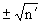 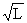
2.5. Перенос в натуру проекта земляных работ следует производить после выполнения работ по подготовке территории строительства (вырубке леса, корчевке пней, переносу и переустройству воздушных и кабельных линий электропередачи и связи, трубопроводных линий, коллекторов и других коммуникаций). Перед началом разбивочных работ следует проверить сохранность точек нивелирной сетки квадратов (40×40 м).
При переносе проекта в натуру разбивка пикетажных и плюсовых точек должна выполняться с точностью в плане ±0,1 м и по высоте ± 10 мм.
2.6. При выполнении нивелировочных и угломерных работ по переносу проекта в натуру следует вести специальные журналы. При переносе в натуру ряда точек по проектным отметкам при разбивке земляных работ, оснований покрытий, коллекторов и др. ведется журнал, в котором должны отмечаться также особенности местных условий, не отраженные в проекте (местные заболоченности, ямы и др.). Эти данные следует сообщать проектной организации для уточнения при необходимости принятых проектных решений.
2.7. При осуществлении с помощью нивелирования контроля за качеством выполненных строительных работ следует вести журнал нивелирования, в котором записывают расхождение между фактическими и проектными отметками. При производстве указанных работ теодолитом ведется журнал измерения углов..
2.8. По окончании работ по переносу проекта в натуру должен составляться акт. К этому акту прилагаются схемы закрепления осей сооружений, на которых следует указать установленные геодезические знаки и фактические данные по их привязке к геодезической разбивочной основе.
2.9. В случаях, когда высокий уровень грунтовых вод или наличие поверхностных вод создают затруднения при выполнении строительных работ, должно быть предусмотрено предварительное осушение территории или устройство временного водоотвода.
2.10. До начала земляных работ с территории, отведенной для строительства аэродрома, должны быть удалены лес, кустарник, пни, валуны, строительный мусор. Вырубку леса и кустарника следует выполнять на площадях, предусмотренных проектом. Ценные породы деревьев необходимо пересаживать в другие места, а также сохранять древесно-кустарниковые растения там, где они не создают препятствий при эксплуатации аэродрома.
2.11. До начала земляных работ должно проверяться выборочным порядком соответствие принятым в проекте показателей состава и состояния грунтов в карьерах, резервах, выемках и естественных основаниях.
3.1. При выполнении земляных работ должны соблюдаться соответствующие общие правила производства земляных работ, предусмотренные главой СНиП по земляным сооружениям, а также специальные правила настоящего раздела. Земляные работы должны выполняться на основе комплексной механизации основных видов работ.
3.2. Проект производства земляных работ должен содержать: схему разбивки летного поля на участки с указанием очередности производства работ, технологические карты на каждый вид земляных работ, привязанные к конкретным условиям, расчет потребного количества машин, оборудования, рабочих для выполнения отдельных видов земляных работ (составляется на основе проекта организации строительства), график потока земляных работ (в увязке с графиками потоков всех других строительных работ), календарный график с расчетом потребных ресурсов, указания по технике безопасности, производственной санитарии, охране окружающей среды при выполнении работ.
3.3. Устройство насыпей высотой более 3 м из пылеватых и тяжелых глинистых грунтов должно быть закончено, как правило, за год до устройства асфальтобетонных или цементобетонных (в том числе сборных) покрытий, оснований с применением материалов, укрепленных вязким битумом или цементом.
3.4. На площадях, где проектом предусмотрено изменение отметок поверхности, должен быть полностью снят плодородный слой почвы. Толщина снимаемого слоя устанавливается проектом.
На грунтовой части летного поля с нулевыми отметками планировочные работы должны выполняться перемешивания плодородной почвы с минеральным грунтом подстилающего слоя.
3.5. Снятый плодородный слой почвы, предназначенный для последующего использования при устройстве грунтодернового покрова; следует складировать в местах с нулевыми отметками или на указанных проектом специальных площадках. Избыточный объем грунта плодородного слоя почвы должен быть вывезен за пределы территории строительства в специально отведенные места для последующего использования в соответствии с проектом.
Использование грунта плодородного слоя почвы для отсыпки насыпей, засыпки траншей и котлованов не допускается.
3.6. До снятия и перемещения плодородный слой почвы должен быть разрыхлен на всю толщину, освобожден от корней деревьев, камней и других инородных включений.
Рыхление, обвалование и транспортирование плодородного слоя почвы необходимо производить при влажности, близкой к оптимальной. Поверхность грунта в зоне производства работ следует увлажнять, а при большой влажности - подсушивать.
3.7. При удалении дернового покрова, а также при хранении грунта плодородного слоя почвы в валах должны быть предусмотрены меры по предупреждению водной и ветровой эрозии (опережающее устройство водоотвода, организация стока, защита откосов и т. п.).
3.8. Полноту снятия плодородного слоя почвы следует контролировать по однородности поверхности подстилающих коренных пород. Грунт, предназначенный для восстановления почвенного слоя, не должен содержать камней диаметром более 5 см, остатков древесины и корней.
3.9. Толщина уложенного плодородного слоя почвы должна контролироваться не менее чем в пяти местах на каждые 1000 м2 поверхности. Отклонение от проектной толщины плодородного слоя почвы не должно быть более величин, приведенных в табл.12 настоящей главы.
3.10. По окончании земляных работ на территории аэродрома все временно занимавшиеся земли, нарушенные при производстве работ, включая земли под временными землевозными дорогами, резервами и карьерами грунта, должны быть восстановлены (рекультивированы) в соответствии с проектом.
3.11. До начала работ по устройству выемок (котлованов, траншей) должен быть обеспечен отвод поверхностных вод. Для временного водоотвода следует использовать резервы, обвалование, направляющие канавы, устраиваемые с нагорной стороны выемки. Расчет временных водоотводных сооружений должен выполняться в соответствии с требованиями главы СНиП по земляным сооружениям.
3.12. На участках с нулевыми рабочими отметками планировочные работы должны выполняться в два этапа. На первом этапе при отклонении поверхности от проектной отметки более чем на 10 см бульдозерами производится исправление местных неровностей (срезка бугров, засыпка ям, канав).
Рабочие отметки предварительной планировки должны назначаться с учетом осадки поверхности в процессе окончательного уплотнения на втором этапе. Величина запаса грунта на осадку принимается по данным пробного уплотнения: при этом на участках, с которых был удален лес, кустарник, камни, а также на участках трудноразрабатываемых грунтов следует производить предварительное рыхление.
3.13. Окончательную планировку летного поля следует производить автогрейдерами или длиннобазовыми планировщиками, уплотняя грунт катками до получения проектной плотности слоя и ровности поверхности летного поля.
3.14. Ровность поверхности летного поля после окончательной планировки должна проверяться трехметровой рейкой, просвет под которой не должен превышать на грунтовой части летного поля 30 мм, а на грунтовом основании под покрытие - 20 мм.
3.15. Выемки могут разрабатываться послойным или забойным методом. Послойным методом следует разрабатывать выемки любой глубины с неоднородным напластованием грунтов.
Забойным методом следует разрабатывать выемки глубиной более 1 м с однородным напластованием грунтов.
Грунт из выемок должен транспортироваться и укладываться в места, определенные картограммой земляных масс.
3.16. Порядок разработки выемок следует устанавливать исходя из условий обеспечения стока поверхностных вод из зоны производства работ. При забойном методе разработку выемки следует начинать с пониженных точек рельефа.
3.17. В нескальных грунтах разработка выемок под покрытия ВПП, РД и МС должна производиться без нарушения структуры грунта в основании. Допускаемая величина недобора устанавливается в соответствии с требованиями главы СНиП по земляным сооружениям. Недобор ликвидируют непосредственно перед устройством слоев аэродромных покрытий.
3.18 Уплотнение естественного основания низких насыпей и выемок выполняется на требуемую проектом глубину непосредственно перед устройством вышележащих слоев одежды.
3.19. Отсыпка грунта в насыпь должна производиться послойно с разравниванием и уплотнением каждого последующего слоя. Толщина технологических слоев устанавливается по данным пробного уплотнения в зависимости от вида используемых грунтов и типа применяемых уплотняющих машин.
3.20. При выполнении земляных работ в процессе строительства аэродрома необходимо осуществлять: входной контроль (предварительное обследование грунтов, предназначенных для устройства насыпей, определение влажности грунтов, проверка устойчивости оснований и др.); операционный контроль и приемочный контроль, заключающийся в выборочной проверке соответствия параметров законченных конструктивных элементов летного поля нормативным и проектным.
3.21. Операционный контроль качества земляных работ должен осуществляться в течение всего периода строительства и охватывать все виды производственных операций.
При контроле качества земляных работ надлежит проверять:
- соблюдение проектных геометрических размеров сооружений аэродрома в плане и по высотным отметкам;
- полноту снятия и складирования плодородного слоя почвы;
- плотность грунта естественного основания под покрытия и на полосах безопасности грунтовой части летного поля;
- однородность грунта в слоях насыпи;
- плотность грунта в слоях насыпи;
- ровность и соответствие проектному профилю поверхности летного поля и оснований под покрытия;
- толщину, однородность и ровность слоя почвы, укладываемого для создания дернового покрова.
Проектом организации строительства могут предусматриваться дополнительные показатели качества земляных работ и контролируемые параметры, а также наблюдения за осадкой и устойчивостью слабых оснований в период строительства.
3.22. Соблюдение геометрических параметров сооружений аэродрома в плане и по высоте следует контролировать по знакам выноса проекта в натуру.
3.23. На грунтовой части летного поля контрольные нивелировочные ходы надлежит прокладывать в двух
взаимно перпендикулярных направлениях и по всем вынесенным точкам проектной нивелировочной сетки.
3.24. Ширина и уклоны поверхности грунтового основания под покрытие должны проверяться на поперечниках через каждые 50 м.
3.25. Отклонения поверхности грунтовой летной полосы от проектного продольного профиля надлежит
контролировать через каждые 5, 10, 20 м путем нивелирования. При этом алгебраическая разность отметок точек не должна превышать величин, указанных в табл. 4 настоящей главы.
3.26. Для уплотнения связных грунтов следует применять катки на пневматических шинах, кулачковые и решетчатые катки, трамбующие и виброударные машины; для уплотнения несвязных - вибрационные и виброударные машины, катки на пневматических шинах.
Уплотнение рыхлых глинистых грунтов следует производить в два приема: предварительное уплотнение катками на пневматических шинах массой 6-12 т и окончательное уплотнение катками массой 25 т и более. Предельную массу катка следует определять по допускаемому по условиям прочности данного грунта контактному давлению на его поверхность.
3.27. Устройство грунтовых оснований под покрытия без уплотнения грунта специальными средствами не допускается, за исключением особых случаев, оговоренных в проекте (нижняя часть песчаных насыпей, отсыпаемых на болотах, насыпи, возводимые из барханных песков, и др.).
3.28. Заданную плотность грунта в верхнем слое грунтовой части летного поля, а также в естественном основании под покрытие в выемках, местах с пулевыми отметками и под низкими насыпями следует контролировать не менее чем в трех точках на каждые 2000 м2 грунтовой части летного поля и на каждые 1000 м2 оснований под покрытия ВПП, РД и МС; при этом поперечники для контроля качества уплотнения должны размещаться не реже, чем через 50 м.
3.29. Плотность и однородность грунтов в насыпях следует проверять в каждом уплотняемом слое в пяти точках (по оси, по краям и в промежутках), размещая поперечники через каждые 100 м для грунтовых летных полос и 50 м для оснований под покрытия, но не менее одного поперечника на 2000 м2 грунтовых летных полос и на 1000 м2 оснований под покрытия.
При заполнении оврагов, траншей, ям в зоне покрытия качество уплотнения должно определяться в каждом уплотняемом слое путем проведения не менее одного замера на каждые 50 м2 площади ямы, траншеи или оврага.
3.30. Основным методом контроля качества уплотнения и применения заданного вида грунта является объемно-весовой метод. Пробы необходимо отбирать из шурфов с глубины 8-10 см от поверхности слоя.
Плотность грунта (объемную массу скелета грунта) в пробе не должна отличаться от проектного в сторону уменьшения более чем на 4%, причем число точек с максимальным отклонением не должно превышать 10% общего числа измерений.
Для операционного контроля плотности грунта допускается использовать ускоренные и полевые экспресс-методы и приборы (радиометрические, пенетрационные, метод замещения объема, прибор Ковалева и др., а для крупнообломочных грунтов - динамический штамп Союздорнии). При этом не менее 10% всех измерений должны выполняться объемно-весовым методом.
3.31. Степень уплотнения крупнообломочных грунтов, содержащих более 60% обломочной фракции, следует считать достаточной, если величина осадки поверхности слоя грунта (кроме верхнего слоя), происшедшей в результате уплотнения, составит 8-10% первоначальной толщины слоя, а грунта верхнего слоя - 10-12%.
3.32. При определении объемов грунта, получаемого из резервов и выемок, следует учитывать изменение этого объема при искусственном уплотнении грунта в насыпи, характеризуемое коэффициентом относительного уплотнения, равным отношению требуемой плотности грунта в насыпи к естественной плотности грунта в резерве.
3.33. Использование в одном слое основания под покрытия грунтов разных видов не допускается (за исключением случаев, когда такое решение специально предусмотрено проектом). При изменении вида грунта в резерве слои из грунтов разных видов следует сопрягать с откосами в местах сопряжения не круче 1:2.
3.34. В случае применения для насыпи одномерных песков проектом организации строительства должны быть предусмотрены меры к обеспечению проходимости по отсыпанной поверхности транспортных и других колесных машин (введение гранулометрических добавок, укрепление поверхности слоев, устройство технологических прослоек и т. п.).
3.35. При использовании для отсыпки насыпей грунтов, имеющих влажность менее 0,9 оптимальной, их следует доувлажнять преимущественно в местах разработки.
При применении грунтов, имеющих влажность выше допускаемой, проектом организации строительства должны предусматриваться меры к обеспечению требуемого уплотнения грунтов при возведении насыпи (естественное подсушивание, обогащение сухими материалами, осушение химическими добавками и др.).
3.36. Влажность грунтов, используемых для устройства насыпей, должна проверяться ежедневно. После выпадения осадков влажность грунтов следует определять дополнительно.
3.37. При использовании для отсыпки насыпей золошлаковых смесей и отходов горнорудной промышленности организация и технология работ должны быть аналогичны тем, какие установлены для отсыпки насыпей из грунтов.
3.38. В процессе выполнения земляных работ и после их окончания необходимо обеспечивать отвод поверхностных вод путем использования постоянного пли устройства временного водоотвода. Скопление воды на отдельных участках не допускается.
3.39. Все работы по рытью и засыпке траншей, предназначенных для водоотводов и инженерных сетей, должны быть выполнены до окончательной планировки поверхности летного поля и оснований под покрытия.
3.40. Плотность грунта в засыпанных траншеях и канавах должны быть не ниже проектной, установленной для грунта на участках насыпей. Обратную засыпку траншей в местах устройства покрытий следует производить несвязными грунтами.
Уплотнение грунтов в стесненных местах следует производить специальными машинами и оборудованием вибрационного, виброударного или ударного действия.
3.41. В зимний период следует преимущественно выполнять работы: по разработке выемок и резервов в сухих песках, гравийно-галечных и скальных грунтах и выемок глубиной более 3 м в глинистых грунтах; по устройству насыпей на устойчивых основаниях из любых грунтов и насыпей на болотах; по выторфовыванию.
3.42. Для насыпей, возводимых в зимнее время, следует применять скальные и крупнообломочные грунты и непылеватые пески. Допускается применять глинистые грунты, имеющие влажность не более оптимальной, за исключением легких супесей. Пески и легкие супеси должны иметь влажность при отсыпке не более 1,2 оптимальной.
При возведении насыпей из глинистых грунтов в зимнее время верхнюю часть насыпи толщиной 1 м следует устраивать после полного оттаивания нижележащих слоев, а в случае необходимости окончания этих работ в зимнее время - только из дренирующих песчаных грунтов без мерзлых включений.
3.43. Основания под насыпи должны быть подготовлены в летнее время, а перед началом земляных работ тщательно очищены от снега и льда. В случае возведения насыпей на основании из пылеватых глинистых грунтов в районах с глубиной промерзания грунта более 1,5 м нижние слои насыпей (1,2-1,5 м) следует возводить до того периода, когда устанавливаются устойчивые отрицательные температуры воздуха.
3.44. Подготовка поверхности грунтовых карьеров к разработке в зимнее время должна выполняться в теплое время года. В состав подготовки входят: устройство подъездных дорог, корчевка деревьев и срезка кустарников, а также устройство утепляющих слоев на поверхности, удержание снегового покрова или использование химических реагентов для предотвращения промерзания грунта.
Способы защиты от промерзания должны быть указаны в проекте организации строительства.
3.45. При возведении насыпей под покрытия полное уплотнение каждого технологического слоя должно быть завершено до начала образования мерзлой корки, при этом количество мерзлых включений в насыпи должно быть при условии их равномерного распределения не более 20%. Размер мерзлых комьев не должен превышать 30 см при уплотнении грунтов трамбующими машинами или плитами и 20 см - при уплотнении катками массой 25 и более тонн. При необходимости устройства слоев одежды до полного оттаивания насыпи укладка мерзлых комьев допускается на глубине не менее 1 м от поверхности.
3.46. При устройстве насыпей высотой в один технологический слой при планировке площадей летных полос, а также при устройстве грунтовых оснований под покрытия допускается увеличение количества мерзлого грунта до 50% н выполнение предварительного уплотнения до величины 0,8-0,9 требуемой плотности. Работу по устройству насыпного слоя следует считать завершенной после окончательного уплотнения слоя, производимого после полного оттаивания грунта.
3.47. Удаление торфа и водонасыщенных илистых грунтов в основании насыпи следует осуществлять способами механической экскавации, гидромеханизации или взрывания на выброс. Допускается применение способа выдавливания слабого грунта массой отсыпаемой насыпи, с предварительным разрыхлением грунта, а при необходимости механическим или взрывным способом. Насыпь при этом следует возводить «от себя» на полную высоту из песчаных или крупнообломочных грунтов.
3.48. Разработку скальных грунтов следует производить, применяя механический или взрывной способ рыхления.
3.49. При устройстве насыпей из крупнообломочных грунтов в верхней части (до 1 м по высоте) следует применять грунты с фракциями не крупнее 250 мм. Максимальный размер фракций грунта, используемого для сооружения остальной части насыпей, не должен превышать 2/з толщины уплотняемого слоя.
3.50. Уплотнение крупнообломочных грунтов, содержащих более 30% суглинка, следует осуществлять при влажности их не выше оптимальной(Wопт), а содержащих менее 30% суглинка - при влажности грунта до 1,3 оптимальной.
При уплотнении легковыветривающихся неводостойких крупнообломочных грунтов влажность раздробленной мелкофракционной части грунта должна соответствовать влажности в состоянии тугопластичной консистенции.
3.51. Уплотнение легковыветривающихся и неводостойких крупнообломочных грунтов следует осуществлять в два этапа: на первом этапе - решетчатыми катками, на втором - катками на пневматических шинах массой 25 и более тонн. Толщина уплотняемых слоев в зависимости от вида грунта не должна превышать 0,3-0,4 м. Уплотнение прочных и водостойких крупнообломочных грунтов следует производить виброкатками массой 6-8 т.
3.52. Легковыветривающиеся размягчаемые горные породы (мергель, опока, аргиллит, алевролит, сланцевые глины и др.) допускается использовать для отсыпки нижней части насыпей, устраиваемых на сухом основании, при этом верхнюю часть насыпи толщиной 1-1,2 м, выполняющую роль защитного слоя по отношению к основному ядру насыпи, следует устраивать из глинистых грунтов слоями 15-20 см.
3.53. Земляные работы на засоленных грунтах с высоким уровнем подъема грунтовых вод необходимо выполнять в период, когда их влажность наиболее близка к оптимальной.
Верхний рыхлый слой засоленного грунта, перенасыщенный солями, и солевые корки толщиной более 3 см должны удаляться с поверхности резервов и основания насыпи.
3.54. Для возведения насыпей на засоленных грунтах при высоком уровне грунтовых вод и возможной глубине резервов не более 0,5-0,6 м следует использовать только бульдозеры и автогрейдеры. Применение грейдеров-элеваторов для возведения насыпей на солончаках допускается только в случае расположения уровня грунтовых вод не ближе 1 м от поверхности земли. Отсыпку насыпи из привозного грунта на мокрых солончаках следует вести способом «от себя».
3.55. Земляные работы при строительстве аэродромов в районах песчаных пустынь следует, как правило, выполнять в зимне-весенний период при наибольшей увлажненности грунта, обеспечивающей наиболее эффективное использование землеройной техники и транспортных средств.
3.56. При выполнении земляных работ в песках, покрытых растительностью, необходимо принимать меры против повреждения растительности, нарушения рельефа и разрыхления поверхности песков.
3.57. Насыпи из барханных песков допускается возводить без дополнительного увлажнения и уплотнения, если лабораторными испытаниями установлено, что при стандартном уплотнении этого песка плотность скелета изменяется не более чем на 0,08 г/см3.
3.58. Устройство на свободных от покрытий участках защитного слоя из связанного грунта в местах насыпей должно производиться вслед за возведением насыпи из песка; при этом влажность грунта должна быть оптимальной. Применять переувлажненные грунты для устройства защитного слоя не допускается. Защитный слой следует укладывать последовательно по ходу движения построечных машин (по способу «от себя»).
Защитные слои из песка, укрепленного вяжущими материалами, следует устраивать согласно требованиям разд. 5 настоящей главы.
3.59. При наличии в основаниях ВПП, РД и МС лессовых и других грунтов, обладающих просадочными свойствами, должны быть осуществлены в соответствии с проектом специальные мероприятия по обеспечению стабильности покрытий. Работы по осуществлению этих мероприятий следует производить в соответствии с требованиями главы СНиП по основаниям и фундаментам,
3.60. При строительстве аэродромов в условиях вечномерзлых грунтов организация и технология производства земляных работ должны соответствовать одному из трех определенных проектом принципов обеспечения стабильности грунтовых оснований:
- сохранение или повышение уровня вечной мерзлоты в основании насыпей;
- ограничение глубины оттаивания грунтов;
- обеспечение предварительного оттаивания вечномерзлых грунтов в основании с последующей заменой или осушением переувлажненных слоев.
3.61. При сохранении вечной мерзлоты грунтового основания насыпь следует возводить в зимне-весенний период до начала интенсивного оттаивания верхнего слоя основания. В пределах контура насыпи заблаговременно должна быть удалена растительность и произведена очистка от снега без нарушения существующего дернового покрова. Полученные при расчистке неделовые древесные материалы (мелколесье, порубочные остатки, хворост) следует расстилать на очищенной полосе перед устройством насыпи.
3.62. При допущении полного или частичного оттаивания грунтового основания отсыпку насыпи следует выполнять в летне-осенний период способом «от себя». Расчистка площадки производится в зимнее время. По мере весеннего протаивания верхнего слоя мохорастительный покров должен быть снят бульдозерами. Поверхностный водоотвод и осушение верхнего слоя (при необходимости) осуществляют в соответствии с проектом организации строительства согласно требованиям главы СНиП по земляным сооружениям. Глубина водоотводных канав должна быть минимальной; водоотвод е нагорной стороны, как правило, следует осуществлять с помощью грунтовых валиков.
3.63. Удаление из оснований, под покрытия непригодных грунтов и льдистых слоев или включений, как правило, следует производить в зимнее время с предварительным рыхлением их взрывным или механическим способом (с применением экскаваторов или взрывами на выброс). В весенне-летний период допускается удалять грунт послойно бульдозерами, по мере оттаивания грунта.
3.64. Заполнение выемок, образующихся после удаления непригодных грунтов, а также отсыпка нижних слоев насыпей на сырых основаниях должны производиться дренирующим грунтом толщиной не менее 0,5 м.
Отсыпка насыпей, как правило, должна производиться способом «от себя». Проезд транспортных средств за пределами контура насыпи допускается только по постоянным или специально построенным временным дорогам.
3.65. Для предупреждения тепловой и водной эрозии многолетнемерзлых грунтов (кроме свободных от растительности выходов скальных и крупнообломочных грунтов) при всех способах устройства оснований, по контурам площадей, где предусмотрено устройство покрытий, должны закрепляться охранные полосы (зоны) шириной не менее 50 м. В период, когда почвенный слой свободен от снегового покрова и находится в оттаявшем состоянии, в пределах охранных полос не допускается выполнение каких бы то ни было наземных работ, а передвижение строительного транспорта допускается только по временным подъездным дорогам. Места почвенного слоя в охранной зоне (колеи, канавы, морозобойные и термокарстовые трещины и др.) следует заделывать в осенне-зимний период талым мохоторфом, уплотняя его слоями толщиной 15-20 см.
3.66. Мохоторф для отсыпки термоизолирующего слоя следует разрабатывать в весенний период по мере оттаивания поверхности грунта за пределами территории строительства или в местах выемок и укладывать в валы для просушки. Термоизолирующий слой следует укладывать на спланированное основание и засыпать слоем грунта толщиной 20-30 см. Толщина термоизолирующего слоя принимается в соответствии с проектом с учетом запаса на уплотнение, определяемого пробной укаткой. Уплотнение термоизолирующего слоя и слоя грунта следует производить одновременно пневмокатками массой 25 т и более.
3.67. Покрытие на насыпях, возведенных на мерзлых основаниях, следует устраивать, как правило, не ранее чем через год после окончания земляных работ.
4.1. Устройство элементов водосточно-дренажных систем, за исключением коллекторов, следует выполнять одновременно с устройством покрытий.
4.2. Дренаж (водоотводные канавы, дрены и осушители на грунтовой летной полосе, глубинные и экранирующие дрены, тальвежные колодцы, дождеприемники или дождеприемные воронки, перепуски от дождеприемных и тальвежных колодцев и коллекторов) необходимо устраивать после окончания планировочных работ.
Закромочные дрены следует устраивать преимущественно после устройства грунтового основания под покрытие.
Бетонные лотки в кромке покрытия следует устраивать во время бетонирования лоткового ряда.
Грунтовые лотки вдоль кромок покрытий следует устраивать после окончания работ по строительству покрытий.
4.3. Работы по устройству водосточных коллекторов на аэродромах должны, как правило, опережать земляные и выполняться в следующей технологической последовательности:
- рытье траншей и крепление их стенок;
- устройство оснований под трубы и колодцы;
- устройство смотровых колодцев;
- укладка труб и заделка стыков;
- проверка трубопроводов на водонепроницаемость;
- засыпка труб в траншеях о уплотнением грунта;
- устройство оголовков.
4.4. В осенне-зимний период дно траншеи водосточного коллектора следует защищать от промерзания (особенно при наличии пучинистых грунтов) путем недобора грунта или укрытия его утеплителями. Оставленный слой грунта необходимо удалять механизированным способом непосредственно перед укладкой труб или устройством специального основания под трубы.
4.5. Рытье траншей для труб, а также котлованов для колодцев ниже горизонта грунтовых вод следует производить после искусственного понижения уровня этих вод или применяя открытый водоотлив. Водоотлив или искусственное водопонижение следует осуществлять в течение всего периода производства работ, в том числе при обратной засыпке траншей.
4.6. Траншеи и котлованы колодцев надлежит защищать от затопления их поверхностными водами путем устройства с нагорной стороны, на расстоянии не менее 0,5 м от бровки, валов грунта, вынутого из траншей или котлованов; при этом примыкающая территория должна быть предварительно спланирована. При наличии избыточных поверхностных вод следует устраивать водоперехватывающие нагорные канавы, располагаемые параллельно траншее и котлованам колодцев на расстоянии не ближе 5 м от бровки.
4.7. При прохождении водосточного коллектора в насыпи, предусмотренной проектом вертикальной планировки аэродрома, сначала следует отсыпать (с уплотнением) насыпь высотой не менее чем на 5 см от проектной отметки верха коллектора, а затем отрывать траншею и укладывать коллектор.
4.8. Рытье траншеи с откосами в местах пересечения с покрытиями не допускается. В этом случае необходимо отрывать траншеи с вертикальными стенками, имеющие минимальную ширину по верху, и стенки обязательно крепить.
4.9. При укладке труб водосточного коллектора надлежит обеспечивать прочность и герметичность стыковых соединений, плотное прилегание труб к основанию, устойчивость трубопроводов от сдвигающих усилий и соблюдение проектного профиля трубопровода.
4.10. Укладку труб следует производить только снизу вверх по уклону после проверки соответствия отметок основания проекту и по достижении прочности бетона в основании не менее 50% проектной.
4.11. При засыпке траншей грунт необходимо уплотнять послойно, не допуская повреждения стыков и смещения труб.
В зимних условиях траншеи необходимо засыпать на 0,5 м выше трубопровода местным- талым грунтом сразу после укладки труб слоями толщиной 0,15-0,2 м, а на участках покрытий - песчаным грунтом на всю глубину траншеи с тщательным послойным уплотнением и устройством защиты от весеннего паводка. Стыки труб до окончания предварительного испытания на водонепроницаемость следует утеплять.
4.12. Перед засыпкой траншей и уплотнением грунта элементы крепления стенок траншей необходимо удалить. Вертикальные элементы крепления следует разбирать после удаления всех горизонтальных распорных рам. Шпунтовые ограждения нужно удалять при помощи кранов.
4.13. Работы по устройству закромочных дрен следует выполнять в следующем порядке:
рытье траншей для дренажных труб; устройство основания и укладка на него дренажных труб;
обкладка труб, за исключением трубофильтров, фильтрующим материалом;
засыпка траншей дренирующим материалом.
4.14. Работы по устройству смотровых и тальвежных колодцев следует выполнять в следующем порядке:
- разбивка местоположения колодцев в плане;
- рытье котлована (уширение траншеи);
- подготовка основания;
- бетонирование или монтаж из сборных элементов днища и стенок нижней части колодца;
- устройство эластичного примыкания труб;
- устройство лотка;
- бетонирование или монтаж сборных элементов стенок верхней части колодца;
- засыпка котлованов (траншей) с уплотнением грунта.
4.15. До засыпки трубопроводов необходимо производить предварительное испытание их на водонепроницаемость. Испытание трубопроводов на водонепроницаемость следует производить участками между смежными колодцами путем замера величины утечки из заполненных водой трубопроводов.
Порядок проведения предварительного испытания и допускаемые величины утечки воды должны соответствовать аналогичным требованиям главы СНиП по наружным сетям и сооружениям водоснабжения, канализации и теплоснабжения.
4.16. Отклонение уклонов дна траншей и канав от проектных не должно быть более указанных в табл. 12 настоящей главы при обязательном соблюдении общего направления проектного уклона. Зазоры между трехметровой рейкой и дном не должны превышать 1,5 см.
4.17. Отклонения уклонов поверхности подготовленного основания под трубопровод от проектных не должны превышать ±0,0005 при обязательном сохранении проектного направления уклонов. Зазоры между трехметровой рейкой и поверхностью основания не должны быть более 0,5 см.
Толщину подготовленного основания следует проверять не реже чем через 10 м, отклонения от проектной толщины не должны превышать ±5%.
5.1. Объем щебня, гравия и гравийно(щебеночно)-песчаной смеси следует определить с учетом коэффициента уплотнения. Коэффициент запаса на уплотнение следует ориентировочно принимать в пределах 1,25-1,35 для щебня и гравия, 1,4-1,5 - для щебня из шлака и уточнять его значение в зависимости от результатов пробного уплотнения.
5.2. Распределение и уплотнение материалов после продолжительных дождей, а также в случае переувлажнения грунтового основания или материала нижележащего слоя искусственного основания не допускается. Работы в этом случае следует приостанавливать и возобновлять после подсушивания грунта (материала) до оптимальной влажности с учетом допускаемых отклонений.
5.3. Наименьшая толщина слоя основания должна в полтора раза превышать максимальный размер зерен щебня (гравия), используемого для его устройства. Толщина уплотняемого слоя из щебня и гравия должна быть не менее 10 см, а в случае укладки на песок - не менее 15 см в плотном теле.
Максимальная толщина слоя в плотном теле не должна превышать 18 см при уплотнении катками с металлическими вальцами и 25 см при уплотнении катками на пневматических шинах.
5.4. Пески природные и из отсевов дробления, применяемые для устройства дренирующих и морозозащитных слоев оснований, должны удовлетворять требованиям ГОСТ 8736-77.
5.5. Длина участка отсыпки песка должна быть не менее длины двухсменной захватки устраиваемого покрытия.
Отсыпанный песок следует разравнивать укладчиком или автогрейдером и уплотнять при оптимальной влажности прицепными или самоходными катками на пневматических шинах или виброкатками.
5.6. Уплотнение слоев оснований следует производить сначала катками массой 6-8 т, а затем катками массой 10-13 т до требуемой плотности, развороты катков при этом следует осуществлять за пределами участков уплотнения.
5.7. Окончательную отделку оснований с уплотнением следует производить профилировщиком основания перед устройством последующих слоев.
5.8. Смесь оптимального состава следует доставлять на место укладки в готовом виде. Приготовление смеси оптимального состава непосредственно на месте укладки с помощью смесительных машин допускается в виде исключения.
5.9. При устройстве оснований в два слоя в нижний слой следует укладывать более крупный материал, а в верхний - более мелкий. Допускается устраивать оба слоя из материала одной крупности.
5.10. Доставленную автомобилями-самосвалами смесь следует распределять по основанию укладчиком с автоматической системой обеспечения ровности. Допускается при технико-экономическом обосновании применение неавтоматизированных укладчиков и автогрейдеров.
5.11. Смесь должна иметь оптимальную влажность (ориентировочно 7-12% массы смеси). При недостаточной влажности смесь следует поливать водой из поливомоечной машины за 20-30 мин до уплотнения.
5.12. Слой смеси следует уплотнять от края к середине последовательно катками массой 6-8 и 10-13 т, перекрывая предыдущий след на 1/3 его ширины. Ориентировочное количество проходов катков соответственно 5-15 и 10-20 по одному следу.
5.13. В процессе укатки необходимо периодически проверять ровность поверхности слоя рейкой и правильность поперечного профиля шаблоном с уровнем. Выявленные неровности следует устранять путем срезки выступов или подсыпки материала в местах просадок с уплотнением.
5.14. Основание, устроенное из высокоактивных и активных шлаков, целесообразно поливать водой ежедневно из расчета 2-2,5 л/м2 до устройства следующего слоя покрытия.
5.15. Для нижних слоев щебеночных оснований следует применять щебень фракций 40-70 и 70-120 мм; для верхних слоев оснований - 40-70 мм; для расклинивания - 20-40, 10-20 и 5-10 мм.
5.16. Распределять щебень следует укладчиками с автоматической системой обеспечения ровности, Допускается при технико-экономическом обосновании применение неавтоматизированных укладчиков и автогрейдеров. При укладке щебня на песок движение автомобилей по песчаному слою не допускается.
5.17. Уплотнение щебеночного основания следует производить в три этапа:
I этап - уплотнение слоя следует выполнять катком массой 6-8 т, подсыпая щебень в местах просадок. Ориентировочное количество проходов катка по одному следу 3-6. Признаком завершения I этапа служит окончание перемещения отдельных щебенок, прекращение образования волны перед катком и отсутствие заметной на глаз осадки щебня;
II этап - уплотнение следует выполнять катком массой 10-13 т ориентировочно за 10-20 проходов по одному следу. Для уменьшения трения между щебенками и ускорения взаимозаклинивания щебень перед уплотнением следует поливать водой из поливомоечных машин. Ориентировочный расход воды 15-25 л/м2.
Признаком окончания II этапа служит отсутствие подвижности щебенок, прекращение образования волны, отсутствие следов после прохода катка; брошенная под ток щебенка раздавливается;
III этап - заполнение пустот мелким щебнем и каменной мелочью.
При использовании щебня из плохо поддающихся уплотнению изверженных горных пород материал перед расклиниванием следует обрабатывать битумом (2-3 кг/м2).
Допускается заполнять пустоты цементопесчаной смесью, имеющей предел прочности на сжатие в возрасте 28 сут 40-60 кгс/см2.
Щебень фракции 10-40 (10-20) мм для расклинивания следует распределять автогрейдером или распределителем щебня из расчета 1,5-2 м3 на 100 м2 основания в зависимости от его крупности. Уплотнение следует выполнять катком массой 10-13 т, поливая водой из поливомоечных машин (Ориентировочный расход воды 10-12 л/м2). Ориентировочное количество проходов катка по одному следу 5-8.
Мелкий щебень фракции 5-10 мм для расклинивания следует доставлять и распределять из расчета 1 м3 на 100 м2 основания. Уплотнять слой следует катком массой 10-13 т ориентировочно за 5-7 проходов по одному следу, поливая щебень водой. Ориентировочный расход воды при уплотнении 10-12 л/м2 основания.
5.18. Качество уплотнения щебня следует проверять на каждых 500 м2 основания путем контрольного прохода гладковальцового катка массой 10-13 т, после которого на основании не должно оставаться следа, а щебень, брошенный на поверхность уплотненного слоя, раздавливается. При контроле плотности можно использовать также метод лунки.
5.19. Толщину слоя щебня следует проверять на каждых 200 м2 площади основания.
5.20. Через каждые 50 м по длине основания следует проверять ровность его поверхности трехметровой металлической рейкой, а также соответствие поперечных уклонов проектным с помощью шаблона с уровнем. Кроме этого, следует проверять соответствие фактических отметок проектным.
5.21. Строительство оснований в зимнее время разрешается по грунтовому основанию, сооруженному полностью (в соответствии с проектом), до наступления отрицательных температур.
5.22. Устройство оснований следует начинать после очистки грунтового основания от снега и льда па участке сменной захватки. При снегопадах и метелях работы необходимо прекращать.
5.23. Количество машин следует определять из расчета полного уплотнения основания до смерзания материалов.
5.24. При температуре воздуха от 0 до минус 5° С продолжительность работ по распределению и уплотнению материала не должна превышать ориентировочно 4 ч, а при более низкой температуре - 2 ч. В последнем случае при влажности материала более 3% во избежание преждевременного смерзания смесь следует предварительно обрабатывать хлористыми солями в количестве 0,3-0,5% массы материала.
5.25. Уплотнение слоев основания в зимнее время следует производить без увлажнения.
5.26. Во время зимних оттепелей, а также перед весенним оттаиванием основание надлежит очищать от снега и льда и обеспечивать отвод воды.
5.27. Достраивать основания и исправлять деформации разрешается только после просыхания грунтового основания и всех слоев и проверки степени их уплотнения.
5.28. Движение транспортных средств по устроенному в зимнее время основанию допускается только после полного его уплотнения.
6.1. Укрепление крупнообломочных, песчаных и глинистых грунтов вяжущими материалами в зависимости от назначения слоя аэродромной конструкции, грунтовых, климатических и других условий следует осуществлять:
смешением компонентов смеси на месте и использованием однопроходных или многопроходных грунтосмесительных машин;
смешением компонентов смеси в стационарных смесительных установках или на заводах с использованием смесителя, как правило, с принудительным перемешиванием.
Перед началом устройства оснований (покрытий) необходимо произвести разбивку, обеспечивающую соблюдение проектной ширины поперечных уклонов и прямолинейности кромок основания, а также проверить плотность и влажность верхней части грунтового основания.
6.2. При обработке крупнообломочных грунтов вяжущим в них не должно содержаться зерен крупнее 40 мм; при отсутствии в крупнообломочных грунтах частиц размером крупнее 25 мм суммарное количество частиц размером от 2 до 25 мм не должно быть более 70% массы грунта, для частиц размером менее 0,5 мм, входящих в состав крупнообломочных грунтов, число пластичности Wnл должно быть не более 12.
При укреплении крупнообломочных грунтов методом смешения компонентов смеси на месте однопроходными или многопроходными грунтосмесительными машинами в грунте не должно содержаться частиц размером более 25 мм.
6.3. Перед обработкой глинистых грунтов (тяжелых супесей, суглинков и глин) любыми вяжущими материалами грунты следует размельчать. Степень размельчения грунтов и их влажность следует проверять один раз в смену.
После размельчения грунтов содержание в них пылевато-глинистых комков размером более 5 мм не должно быть больше 25% массы, в том числе содержание комков более 10 мм допускается не более 10%.
При обработке маловлажных (с влажностью менее 0,3 предела текучести) тяжелых суглинков и глин в сухую погоду при температуре воздуха свыше +20° С в грунт необходимо вводить добавки поверхностно-активных веществ (сульфитно-дрожжевой бражки, смачивателя ОП-7 или ОП-10, смолы нейтрализованной воздухо-вовлекающей, кремнийорганической жидкости ГКЖ-94).
Добавки следует вводить в грунт в виде водных растворов через распределительное устройство грунтосмесительных машин в количестве, установленном в табл.1.
|
Наименование добавки |
Количество добавок и массы грунта |
|
Кремний органическая жидкость (ГКЖ-941) |
0,1 |
|
Смола нейтрализованная воздухововлекающая (СНВ) |
0,1 |
|
Сульфитно-дрожжевая бражка (СДБ) |
0,15-0,5 |
|
Смачиватель ОП-7 и ОП-10 |
0,05-0,5 |
6.4. Укладку и уплотнение смеси, приготовленной в стационарной смесительной установке или методом смешения на месте с использованием грунтосмесительных машин, следует производить при оптимальной влажности до достижения плотности укрепленного материала не менее 0,98 максимальной стандартной плотности.
При использовании неорганических вяжущих материалов в сочетании с органическими вяжущими или при применении самостоятельно органических вяжущих, количество воды для приготовления смеси, соответствующее оптимальной влажности, следует уменьшить на количество вводимого органического вяжущего или на количество воды и вяжущего, содержащихся в эмульсии, если органическое вяжущее вводится в эмульгированном виде.
6.5. При контроле качества укладки и уплотнения смеси грунта с вяжущим следует проверять влажность смеси, соблюдение заданной толщины слоя, степень уплотнения смеси, ровность и поперечный уклон поверхности слоя.
6.6. Коэффициент уплотнения для грунтов, укрепленных неорганическими вяжущими, следует определять как отношение плотности скелета грунта вырубок (кернов) и плотности скелета грунта образцов из смеси грунта с вяжущим, уплотненных при оптимальной влажности методом стандартного уплотнения.
Коэффициент уплотнения для грунтов, укрепленных органическими вяжущими, необходимо определять как отношение плотности скелета грунта вырубок (кернов) к плотности скелета грунта образцов из смеси грунта с вяжущим, уплотненных при оптимальной влажности под нагрузкой 300 кгс/см2, а при добавке в смесь грунта с органическим вяжущим портландцемента или карбамидной смолы образцы следует уплотнять при нагрузке 150-200 кгс/см2.
6.7. Длину участка при укреплении крупнообломочных или глинистых грунтов неорганическими вяжущими следует принимать из условия завершения в течение одной рабочей смены всех технологических операций по приготовлению смеси грунта с вяжущим, ее укладке и уплотнению.
При использовании в качестве вяжущего цемента уплотнение смеси до максимальной плотности следует закончить не позднее 3 ч, а при температуре воздуха ниже +10° С - не позднее 5 ч с момента введения воды или раствора солей в. смесь. При укреплении крупнообломочных грунтов и песков цементом в сочетании с добавками в виде поверхностно-активных веществ (СДБ, СИВ, ГЮК-94) или в виде битумных эмульсий, жидкого битума, гудрона, сырой нефти уплотнение смеси допускается производить не позднее 8 ч после ее увлажнения.
6.8. Смешение в стационарных смесительных установках крупнообломочных, песчаных грунтов или супесей с неорганическими вяжущими следует осуществлять при оптимальной влажности смеси, но в зависимости от погодных условий могут допускаться следующие отклонения:
- при сухой погоде (без осадков и температуре воздуха выше -|-20°С) - на 2-3% выше оптимальной;
- при температурах воздуха менее +10° С и при наличии осадков - на 1-2% меньше оптимальной.
При температуре воздуха выше +20° С для замедления процесса схватывания смеси и обеспечения оптимальных условий уплотнения следует вводить в смесь добавки поверхностно-активных веществ в количествах, установленных в табл. 1, или добавки органических вяжущих (битумных эмульсий, жидкого битума, гудрона или сырой нефти) в количестве 1-3% массы грунта.
6.9. При комплексном укреплении грунтов неорганическими вяжущими с добавками легко-растворимых солей, щелочей, поверхностноактивных веществ добавки должны вводиться в грунт в виде водного раствора. При этом концентрацию раствора и его количество следует назначать с учетом получения смеси с оптимальной влажностью.
6.10. При использовании однопроходных или многопроходных грунтосмесительных машин смешение крупнообломочных песчаных или супесчаных грунтов с цементом и добавками битумных эмульсий, жидкого битума, гудрона или сырой нефти следует начинать с введения в грунт органической добавки, а затем последовательно вводить цемент и воду, доводя смесь до оптимальной влажности.
6.11. В случае, когда в укрепляемый крупнообломочный, песчаный или супесчаный грунт вводится добавка золы уноса или золошлаковой смеси или другая несвязная дисперсная добавка в количестве более 15% массы смеси, эти добавки следует предварительно распределить по грунту, перемешать с грунтом и уплотнить смесь до 0,85-0,9 максимальной плотности.
Далее необходимо осуществлять операции по введению неорганического вяжущего и другие технологические операции.
6.12. Качество добавок зол уноса, золошлаковых смесей или молотого известняка следует определять по содержанию в них частиц размером менее 0,071 и крупнее 2 мм путем рассева на ситах сухим способом.
6.13. При приготовлении смеси из глинистых грунтов с неорганическими вяжущими материалами с помощью однопроходной грунтосмесительной машины грунт одновременно размельчается до требуемого зернового состава.
При использовании многопроходных грунтосмесительных машин размельчение грунта должно быть закончено на всем протяжении сменной захватки до начала распределения неорганического вяжущего.
6.14. При комплексном укреплении грунтов с использованием однопроходных или многопроходных грунто-смесительных машин с применением цемента в сочетании с добавками извести, шлака, золы-уноса или золошлаковых смесей, с применением извести совместно с добавками золы-уноса или золошлаковых смесей сначала следует в грунт вводить добавки и перемешивать их с грунтом до однородного состояния с одновременным увлажнением смеси до оптимальной влажности, после чего грунт необходимо профилировать и уплотнять согласно требованиям п. 6.16. Укрепление грунта цементом после внесения добавок извести и шлака следует производить через 24 ч, а после введения неактивной золы-уноса или золошлаковых смесей - в соответствии с принятым темпом производства работ.
6.15. Качество приготовления смесей необходимо контролировать в каждых 300 м3 готовой смеси, но не реже одного раза в смену; при этом контролируются: точность дозирования компонентов смеси; качество готовой смеси - по внешним признакам (отсутствию сгустков, агрегатов, необработанных мест) и путем определения физико-механических свойств образцов. Полученные результаты сравнивают с данными лабораторного подбора.
6.16. Укладку оптимально увлажненной смеси в слой аэродромного покрытия следует производить универсальными распределителями и укладчиками со скользящими формами. Как исключение, допускается распределение смеси автогрейдерами. Уплотнение смеси, как правило, следует осуществлять с помощью самоходных катков на пневматических шинах или вибрационными катками.
Каждый последующий проход катка должен перекрывать полосу предыдущего прохода не менее чем на 20 см. При этом необходимо учитывать, что при укреплении грунтов известью или золами-уноса, используемыми в качестве самостоятельного вяжущего, уплотнение следует закончить не позднее одних суток после увлажнения смеси. При укреплении грунтов золами уноса, используемыми как активный компонент вяжущего в количестве более 15% массы смеси, уплотнение должно быть закончено не позднее чем через 14-18 ч с начала увлажнения смеси.
6.17. Для ухода за свежеуложенным грунтом, укрепленным неорганическим вяжущим, необходимо применять светлые пленкообразующие материалы (помароль ПМ-86 и ПМ-100А). Допускается для получения защитной пленки применять битумные эмульсии при температуре наружного воздуха не выше +20°С или при отсутствии светлых пленкообразующих материалов. Битумные эмульсии для указанных целей следует применять быстро и среднераспадающиеся, 20-25%-ной концентрации.
В случае применения темных пленкообразующих материалов при температуре воздуха свыше +20° С поверхность должна быть осветлена песком или другим материалом.
Розлив пленкообразующих веществ следует производить из расчета 0,8-1,2 л/м2. При этом их рабочая вязкость должна составлять 10-20 по стандартному вискозиметру (при отверстии вкладыша 3 мм).
6.18. Открывать движение построечного транспорта по слою основания или покрытия следует не ранее чем через 5 сут. со дня его устройства в случае получения укрепленного материла, удовлетворяющего требованиям I класса прочности при толщине укрепленного материала не менее 15см, пли при получении укрепленного материала, удовлетворяющего требованиям II класса прочности при толщине укрепленного материала не менее 20 см.
При получении укрепленного материала, удовлетворяющего требованиям III класса прочности, движение построечного транспорта следует открывать не ранее чем через 7 сут. со времени его устройства при толщине укрепленного материала не менее 25 см.
Можно открывать движение построечного транспорта и устраивать верхние слои покрытий:
- на следующий день после устройства укрепленного слоя при укреплении связных грунтов;
- в течение первых двух суток после устройства основания из укрепленных несвязных грунтах с использованием добавок ПАВ, битумных эмульсий, жидких битумов, гудронов или сырой нефти;
- сразу же после уплотнения основания до требуемой плотности при использовании в качестве вяжущего золы-уноса сухого отбора.
6.19. При смешении в стационарных смесительных установках крупнообломочных, песчаных грунтов, супесей с жидким битумом, битумной эмульсией, каменноугольным дегтем и активными добавками в количестве не более 20% массы грунта, а также при смешении грунта с битумной эмульсией или жидким битумом совместно с цементом, вяжущие вещества, добавки (кроме молотой негашеной извести) и воду следует вводить в грунт одновременно и перемешать. Смесь увлажняется до оптимальной влажности, при этом количество воды должно быть уменьшено на количество добавляемого битума или воды, содержащейся в эмульсии.
6.20. При использовании в качестве активной добавки молотой негашеной извести ее необходимо тщательно распределить по грунту и перемешать многопроходным грунтосмесителем. Последующую обработку грунта органическими вяжущими в смесительной установке допускается производить по истечении не менее 12 и не более 24 ч после внесения извести.
Значение влажности грунта перед внесением негашеной извести должно обеспечивать гидратацию извести.
6.21. При использовании однопроходных или многопроходных грунтосмесительных машин смешение крупнообломочных, песчаных грунтов или супесей с органическими вяжущими необходимо осуществлять таким образом, чтобы органическое вяжущее вводилось в грунт или в смесь грунта с добавками через распределительные устройства грунтосмесительных машин в полной норме.
Если влажность грунта при этом меньше оптимальной, то грунт предварительно необходимо доувлажнить.
При использовании в качестве добавки молотой негашеной или гидрофобной извести влажность грунта должна обеспечивать гидратацию извести, при этом органическое вяжущее следует вводить в смесь грунта с известью по истечении не менее 12 и не более 24 ч после внесения в грунт извести.
6.22. Смешение глинистых грунтов с органическими вяжущими следует осуществлять, как правило, методом приготовления смеси непосредственно на месте с использованием однопроходных или многопроходных грунтосмесительных машин.
При этом необходимо соблюдать правила, касающиеся использования при укреплении грунтов органическими вяжущими добавок молотой негашеной или гидрофобной извести (согласно п. 6.21 настоящего раздела).
6.23. При использовании жидкого битума и дегтя следует контролировать температуру нагрева их в каждом котле или битумовозе; для битумов и дегтей, полученных путем разжижения вязких битумов, низкотемпературного пека или дегтя, следует проверять также вязкость, отбирая в среднем две пробы из каждого котла.
6.24. В битумной эмульсии следует контролировать содержание битума:
- при использовании эмульсии для приготовления смеси в установке не реже двух раз в смену;
- при приготовлении смеси на дороге в каждом битумовозе или гудронаторе.
6.25. Приготовление смолобитумного вяжущего, используемого для укрепления глинистых грунтов, следует производить в емкостях, оборудованных механическими мешалками или насосами, при этом компоненты смолобитумного вяжущего следует перемешивать без подогрева. Смолобитумное вяжущее может храниться без от-вердителя не более 3 сут. Готовое вяжущее с добавкой отвердителя необходимо вводить в грунт не позднее чем через 3 ч после приготовления.
6.26. При обработке суглинков смолобитумным вяжущим в смесительных установках или с помощью грунтосмесительной машины смолобитумное вяжущее и отвердитель необходимо вводить в грунт совместно (за исключением условий, оговоренных в п. 6.27 настоящего раздела).
6.27. При использовании смолы после длительного хранения (если она отвечает техническим требованиям), а также при укреплении грунтов при температурах воздуха свыше 25° С смолобитумное вяжущее и отвердитель следует вводить в грунт раздельно.
6.28. При обработке грунтов с влажностью, близкой к оптимальной, смолобитумное вяжущее и отвердитель должны до введения в грунт перемешиваться.
6.29. Точность дозирования компонентов смеси и ее качество необходимо контролировать согласно требованиям п. 6.15.
6.30 Укладку готовой смеси в слой основания или покрытия из грунтов, укрепленных органическими вяжущими, следует производить, как правило, с использованием универсальных укладчиков смеси.
При приготовлении смеси на месте, профилирование смеси следует осуществлять, как правило, профилировщиками и распределителями. Допускается распределение смеси автогрейдером.
6.31. Уплотнение смеси грунтов, укрепленных битумной эмульсией и известью, либо битумной эмульсией или жидким битумом совместно с цементом, следует производить не позднее чем через 2 ч после окончания перемешивания смеси в смесителе. При температурах воздуха ниже +15° С разрыв между окончанием перемешивания смеси и началом уплотнения ее допускается до 4 ч.
Уплотнение смеси необходимо производить самоходными или прицепными катками на пневматических шинах и виброкатками с перекрытием проходов катка не менее чем на 20 см.
Уплотнение грунтов, обработанных битумной эмульсией с добавкой извести, а также битумной эмульсией или жидким битумом совместно с цементом необходимо закончить в течение суток после укладки смеси. Если уплотнение грунта производилось при влажных погодных условиях и температуре воздуха ниже +15° С, то допускается произвести повторное уплотнение его не позднее двух суток после первоначального уплотнения для грунтов, обработанных битумной эмульсией совместно с цементом, и не позднее четырех суток для грунтов, обработанных битумной эмульсией с добавкой извести.
6.32. За уплотненным слоем грунта, укрепленного битумной эмульсией или жидким битумом совместно с цементом при температуре воздуха выше +12°С и отсутствии атмосферных осадков, необходимо осуществлять уход путем розлива битумной эмульсии из расчета 0,8-1 л/м2.
6.33. Производство работ по укреплению грунта при температурах воздуха от +5 до минус 10° С необходимо осуществлять, соблюдая следующие условия;
- значение влажности обрабатываемых грунтов не должно быть более 0,7 значения влажности на границе текучести грунта;
- укрепляемый грунт не должен замерзать в процессе его обработки и уплотнения;
- твердение цементогрунта должно происходить при температуре воздуха не ниже минус 10° С.
6.34. При укреплении грунтов при пониженных температурах в грунт необходимо вводить добавки, понижающие температуру замерзания воды, в количестве 0,5-1,5% массы грунта или добавки веществ, обеспечивающие связывание избыточной воды, в количестве 0,5-5% массы грунта.
6.35. При влажности грунта, равной или превышающей' оптимальную влажность смеси, вещества, понижающие температуру замерзания жидкой фазы смеси, следует вводить в грунт в порошкообразном, гранулированном или кристаллическом состоянии с помощью распределителей удобрений.
6.36. Водосвязывающие добавки веществ следует вносить в грунт в порошкообразном состоянии перед введением солей, понижающих температуру замерзания жидкой фазы смесей.
6.37. При пониженных температурах воздуха при укреплении крупнообломочных и песчаных грунтов приготовление смеси следует производить в смесительных установках, а при укреплении глинистых грунтов - однопроходными грунтосмесительными машинами.
6.38. Уплотнение слоя цементогрунтовой смеси следует производить катками на пневматических шипах. Уплотнение слоя должно быть закончено не позднее 5 ч после введения в грунт добавок веществ, понижающих температуру замерзания смеси.
6.39. Уход за уплотненным слоем цементогрунта следует производить с помощью слоя песка толщиной 6- 8 см.
По основанию, построенному до наступления пониженных температур, следует устраивать на зимний период защитный слой из песка или слой износа.
Движение построечного транспорта по укрепленному слою цементогрунта допускается при достижении прочности его не менее 50% проектной.
7.1. Каменные материалы следует хранить на открытых площадках с твердым покрытием. Цемент должен храниться в закрытых складах. Гранулированный доменный шлак допускается хранить на открытом складе.
7.2. Для повышения активности гранулированного доменного шлака, особенно при длительном хранении (свыше 0,5 года), его следует измельчать перед подачей в дозаторное отделение смесительной установки в шаровых и других мельницах. До измельчения шлак должен быть высушен. Режим работы измельчающего оборудования должен быть выбран таким, чтобы обеспечивались требования ГОСТ 23558-79 по величине удельной поверхности дробленых шлаков. Измельченный шлак должен храниться в закрытых складах, аналогичных складам цемента.
7.3. Приготовление смеси должно осуществляться в смесительных установках. В случае раздельной подачи гранулированного шлака и цемента установки должны быть оснащены двумя дозаторами для этих вяжущих. Вода в смеситель добавляется в количестве, обеспечивающем получение максимальной плотности уплотненной смеси. Допускается при технико-экономическом обосновании применять метод смешения на месте укладки.
7.4. Распределение смеси следует выполнять укладчиком с автоматической системой обеспечения ровности. Допускается при технико-экономическом обосновании распределение смеси неавтоматизированным укладчиком и автогрейдером.
7.5. Толщину распределяемого материала следует назначать с учетом коэффициента уплотнения. Коэффициент запаса на уплотнение смеси следует ориентировочно принимать в пределах 1,25-1,35 и уточнять его значение по результатам пробного уплотнения.
7.6. Уплотнять основание следует катками на пневматических шинах. Для достижения необходимой плотности требуется не менее 16 проходов катка по одному следу. Плотность основания после его уплотнения должна быть не менее 0,98 максимальной, определяемой по ГОСТ 22733-77 для смесей, содержащих менее 30% зерен крупнее 10 мм. Для других смесей признаком окончания уплотнения должно служить отсутствие следа от прохода катка, применявшегося при окончательном уплотнении.
7.7. По окончании уплотнения основания при необходимости следует отделывать его поверхность с целью ликвидации дефектных мест. Уплотнение и отделка основания должны быть закончены не позднее окончания схватывания вяжущего.
Качество уплотнения проверяется на каждых 500 м2 контрольным проходом катка массой 10-13 т в конце уплотнения. На основании не должно оставаться следа от прохода катка. При контроле плотности может использоваться также метод лунки.
7.8. Сразу после окончания уплотнения и отделки основания на его поверхность должна наноситься защитная водопаронепроницаемая пленка или поверхность основания должна засыпаться слоем песка толщиной 8 см с поливкой водой первые 7 сут. через 6-8 ч и до 20 сут. - один раз в смену.
7.9. Толщину слоя, ровность поверхности и соответствие поперечных уклонов проектным проверяют в соответствии с пп. 5.19 и 5.20 настоящей главы.
7.10. Покрытие по такому основанию следует укладывать в день устройства основания (при применении добавок - замедлителей схватывания вяжущего и на следующий день) или после набора 50% проектной прочности.
7.11. Для приготовления и укладки каменных материалов, обработанных неорганическими вяжущими, при пониженных положительных и отрицательных температурах должны применяться специальные мероприятия: утепление конструкции и введение в смеси хлористых солей.
7.12. В зависимости от температуры воздуха хлористые слои следует добавлять по указанию табл. 2.
|
Температура производства работ, °С |
Дополнительные мероприятия по устройству основания |
|
|
утепление основания засыпкой толщиной, см, не менее |
добавка солей, % массы воды затворения |
|
|
От +5 до 0 |
10 |
- |
|
От 0 до минус 5 |
10 |
5% NaCl или 3% СаС12 или 3% NaCl и 2% СаС12 |
|
От минус 5 до минус 7 |
10 |
3% СаС12 и 4% NaCl |
|
От минус 7 до минус 10 |
10 |
3% СаС12 и 7% NaCl |
7.13. До замерзания укрепленный материал в основании должен набрать прочность не менее 70% проектной.
7.14. Хлористые соли должны удовлетворять требованиям нормативных документов.
7.15. Во избежание смерзания материалов перед дозированием весовая влажность песка не должна превышать 3%, а щебня 3,5- 4%. Применение мерзлого песка допускается только после отсева смерзшихся комьев крупнее 10 мм. В щебне и песке не допускается наличие снега.
7.16. Приготовление растворов хлористых солей должно производиться в специальных узлах, смонтированных при смесительных установках.
7.17. Хлористые соли натрия и кальция следует подавать в две отдельные рабочие емкости, где их необходимо размешать до получения раствора повышенной концентрации.
7.18. Приготовленные растворы следует перекачивать в расходную емкость, где их разбавляют водой до требуемой концентрации. В процессе приготовления, хранения и расходования солевых растворов их следует периодически перемешивать.
7.19. Готовые солевые растворы следует подавать из расходных емкостей в дозировочный бак и оттуда в смеситель.
8.1. При устройстве монолитных покрытий следует соблюдать правила производства и приемки работ, установленные главой СНиП по монолитным бетонным и железобетонным конструкциям, а также правила настоящего раздела.
8.2. Бетонные покрытия следует устраивать с использованием комплекта высокопроизводительных машин с автоматической системой обеспечения ровности в скользящих формах, а также комплектом машин на рельсовом ходу.
Бетоноукладчики со скользящими формами следует применять преимущественно для устройства покрытий без сквозных швов с прокладкой (по типу шва расширения) и без армирования поперечных ложных швов (по типу шва сжатия).
Способ устройства бетонного покрытия должен быть определен в проекте организации строительства на основе технико-экономического обоснования.
8.3. Бетонировать покрытия и основания при максимальной суточной температуре воздуха свыше +30° G, перепаде температур воздуха за сутки более +12° С и относительной влажности воздуха менее 50%, что характерно для условий сухого и жаркого климата, следует, как правило, в вечерние и ночные часы.
8.4. Компоненты для приготовления бетонной смеси и другие материалы, применяемые при устройстве цементобетонных покрытий (арматурная сталь, мастика и др.). должны поставляться и применяться в соответствии с действующими стандартами и техническими условиями.
При несоответствии исходных заполнителей (щебень, песок) требованиям ГОСТов, ТУ или СНиП необходимо производить их переработку (очистку, классификацию и др.) на прирельсовых базах и бетонных заводах.
8.5. Подвижность бетонной смеси, характеризуемая осадкой конуса, должна быть перед уплотнением:
- не более 2 см при применении бетоноукладчика на рельсовом ходу;
- 2 см при применении бетоноукладчика со скользящими формами, при этом скорость движения бетоноукладчика должна быть не более 2 м/мин; состав бетонной смеси следует назначать также из условий обеспечения устойчивости кромок и боковых граней свежеотформованного покрытия. При необходимости увеличения скорости бетонирования до 3-3,5 м/мин допускается использовать бетонные смеси с осадкой конуса до 4 см. В этом случае для обеспечения устойчивости кромок и боковых граней свежеотформованного покрытия после прохода бетоноукладчика следует применять инвентарную опалубку.
8.6. Подбор состава бетонной смеси и испытание бетона на морозостойкость следует осуществлять на мате риалах, которые будут использоваться для устройства аэродромных покрытий.
8.7. До начала устройства покрытия должно быть проведено пробное бетонирование (на второстепенном участке) комплектом бетоноукладочных машин по заданному режиму бетонирования с использованием бетон ной смеси рабочего состава. При пробном бетонировании следует оценить соответствие технологических свойств бетонной смеси заданным, качество уплотнения и отделки поверхности покрытия, устойчивость кромок и боковых граней покрытия, устраиваемого в скользящих формах, определить припуск бетонной смеси на уплотнение, про извести настройку рабочих органов бетоноукладчика. Протяженность участка пробного бетонирования должна быть не менее 200 м.
При необходимости для оценки качества бетона при пробном бетонировании следует выбуривать или выпиливать образцы из покрытия.
По результатам пробного бетонирования следует от корректировать состав бетонной смеси и режим работы бетоноукладочных машин, решить вопрос о целесообразности применения инвентарной опалубки для обеспечения геометрических параметров плиты, а также отработать технологию устройства покрытия.
8.8. Производство работ по устройству оснований из песчаного бетона, керамзитобетона и шлакобетона (из доменных шлаков) следует осуществлять в соответствии с правилами настоящего раздела.
8.9. Бетонные покрытия следует устраивать в следующем порядке:
- подготовка верха основания (профилировка, устройство выравнивающего слоя и разделительных прослоек), установка устройств, определяющих ровность покрытия (копирные струны, инвентарная опалубка, рельс-формы и др.), установка элементов деформационных швов, а также арматурных сеток и каркасов;
- распределение бетонной смеси, уплотнение ее и отделка поверхности покрытия;
- уход за свежеуложенным бетоном;
- устройство деформационных швов.
8.10. Количество бетоносмесительных установок, транспортных средств для доставки бетонной смеси к месту укладки и линейных машин и оборудования для устройства цементобетонных аэродромных покрытий следует выбирать исходя из годового объема работ и руководствуясь данными, приведенными в приложении к главе СНиП по автомобильным дорогам (пересчитывая площадь покрытий на полосу шириной 7,5 м).
8.11. В процессе строительства монолитных бетонных покрытий следует контролировать качество мате риалов для приготовления бетона, приготовление и транспортирование бетонной смеси, качество уплотнения и отделки поверхности основания, установку рельс-форм (опалубки) или копирных струн, установку элементов стыковых соединений, арматурных каркасов (сеток), подвижность бетонной смеси, объем вовлеченного в бетонную смесь воздуха, качество отделки поверхности покрытия п его ровность, качество кромок и боковых граней при устройстве покрытия в скользящих формах, устройство швов и уход за бетоном.
8.12. Приготовление бетонных смесей следует производить на автоматизированных бетонных заводах, оснащенных смесительным оборудованием цикличного или непрерывного действия, обеспечивающим получение смеси, удовлетворяющий требованиям ГОСТ.
Бетоносмесительные установки следует выбирать однотипными, а их количество должно быть минимальным с общей производительностью, обеспечивающей принятый темп укладки бетона. Бетоносмесительные установки необходимо оборудовать узлами для механизированного приготовления и автоматизированного дозирования водных растворов добавок поверхностно-активных веществ.
8.13. Емкость складов заполнителей, цемента и других материалов следует назначать с учетом сроков под ставки материалов на строительство и темпов устройства бетонных покрытий.
8.14. Цемент на прирельсовой базе и на бетонном за воде должен храниться на складах, оснащенных системой пневмотранспорта для загрузки и выгрузки, в условиях, исключающих снижение его качества.
Склады должны, иметь необходимое оборудование для механизированной разгрузки цемента из железнодорожных вагонов, цементовозов и других транспортных средств.
8.15. Цемент необходимо хранить раздельно по виду и маркам; срок хранения цемента должен быть, как правило, не более одного-двух месяцев.
Крупный и мелкий заполнители (щебень, гравий, щебень из гравия, песок) следует складировать раздельно по виду породы и поставляемым фракциям.
Разгрузку заполнителей следует производить, как правило, в подрельсовый бункер с отсыпкой в штабель с помощью транспортеров. В случае высокого уровня грунтовых и верховых вод разгрузку материалов необходимо осуществлять непосредственно в штабель.
Заполнители должны складироваться на площадках, имеющих покрытие из монолитного или сборного бетона, в условиях, исключающих их загрязнение и смешивание различных фракций и видов пород.
Внутрискладскую переработку заполнителей следует производить с использованием фронтальных одноковшовых погрузчиков на пневматическом ходу.
8.16. Материалы для приготовления бетонной смеси должны дозироваться по виду и фракциям раздельно в соответствии с рабочим составом, выданным лабораторией.
8.17. Для обеспечения высокого качества и однородности бетонной смеси, а также обеспечения максимального темпа бетонирования смесь должна выпускаться непрерывно и равномерно в процессе укладки бетона.
8.18. Транспортирование бетонной смеси следует производить автобетоновозами, а также автомобилями-самосвалами, оборудованными устройствами для защиты смеси от атмосферных воздействий. Грузоподъемность автомобиля, геометрическая емкость его кузова и количество машин должны выбираться в зависимости от типа бетоносмесительной установки, применяемого комплекта бетоноукладочных машин, темпа бетонирования и дальности транспортирования смеси.
8.19. Непосредственно после выгрузки бетонной смеси из бетоновозов или автомобилей-самосвалов кузова необходимо очищать и промывать водой.
8.20. Автоматическая система обеспечения ровности комплекта высокопроизводительных машин, начиная с верха земляного полотна, должна работать, как правило, от двух копирных струн.
8.21. Разбивку линии установки копирных струн и рельс-форм в плане следует производить с одной стороны при помощи теодолита, а с другой стороны по шаблону. Установку копирных струн и рельс-форм следует производить по проектным отметкам с помощью нивелира.
Копирную струну следует закреплять в кронштейнах на стойках, устанавливаемых на расстоянии не более 15 м друг от друга на прямых участках и через 4-6 м на виражах. Длина участка с установленными копирными струнами должна быть не менее сменной производительности комплекта машин. Отклонение копирной струны от проектных отметок продольного и поперечного профилей не должно превышать ±6 мм.
8.22. Установленные рельс-формы следует обкатывать наиболее тяжелой машиной комплекта.
Разница в отметках положения рельс-форм по проекту и после обкатки, а также взаимное превышение рельс-форм в стыках не должны превышать 3 мм.
Рельс-формы перед установкой должны быть очищены от остатков бетона, а непосредственно перед укладкой бетонной смеси должны быть смазаны с внутренней стороны отработанным маслом.
8.23. Рельс-формы следует снимать не ранее 24 ч после укладки бетонной смеси.
Отделять рельс-формы от бетона следует, обеспечивая целостность боковых граней и кромок плит. Не допускается забивка клиньев, ломов и т. п. между бетоном покрытия и опалубкой. При перестановке рельс-форм перемещение их волоком не допускается.
8.24. При устройстве покрытий из плит со шпунтовыми соединениями с внутренней стороны к рельс-формам следует крепить приставную опалубку.
При бетонировании однослойных покрытий толщиной более высоты рельс-форм снизу к рельс-формам следует крепить подкладки шириной не менее ширины основания рельс-формы.
8.25. Для армированных и предварительно напряженных цементобетонных покрытий должна применяться арматура в соответствии с требованиями проекта и главы СНиП на проектирование аэродромов.
8.26. При изготовлении арматурных сеток и каркасов следует преимущественно применять контактную сварку.
Хранение сеток и каркасов, их строповка при погрузке и разгрузке, а также их транспортирование должны производиться способами, не приводящими к повреждениям и деформациям изделий.
8.27. Перевозку сеток и каркасов следует производить на автомашинах и полуприцепах седельного типа, оборудованных специальной рамой по размеру сеток и каркасов. Между сетками (рядами каркасов) при их погрузке необходимо укладывать доски на расстоянии 1 - 1,5 м друг от друга в зависимости от жесткости сеток (каркасов).
8.28. Отклонение высотного положения арматуры от проектного по высоте покрытия должно быть не более 0,5 см при обязательном сохранении минимальной толщины защитного слоя. Способ установки арматуры должен указываться в проекте производства работ и обеспечивать ее проектное положение после укладки бетонной смеси.
8.29. До начала бетонирования необходимо произвести чистовую профилировку основания па ширину, которая определяется с учетом геометрических параметров ходовой части бетоноукладочных машин. При устройстве покрытия в рельс-формах следует профилировать основание на ширину покрытия после установки рельс-форм.
Установку арматуры, прокладок и штырей деформационных швов, следует производить после установки рельс-форм и окончательного уплотнения и профилирования основания.
Боковые грани ранее забетонированных плит должны быть обмазаны битумом.
8.30. Укладку бетонной смеси в покрытие следует производить продольными рядами вдоль оси покрытия с устройством маячных рядов или без них. При выборе схемы укладки бетонной смеси в покрытие следует учитывать возможность организации движения автотранспорта по основанию, сроки твердения бетона, число перестановок бетоноукладочного оборудования, копирных струн, рельс-форм, а также необходимость отвода поверхностных вод в процессе устройства покрытия.
8.31. Укладка бетонной смеси на переувлажненное основание не допускается.
8.32. Езда по подготовленному основанию при бетонировании маячных рядов допускается только в случаях, когда на поверхности основания не остается колей от проездов. В других случаях для предотвращения повреждения поверхности основания следует предусматривать использование переносных щитов, сборных колейных или металлических покрытий или повторную планировку и уплотнение основания. Движение автотранспорта по раз делительным и выравнивающим прослойкам, устраиваемым из неукрепленных материалов, не допускается.
8.33. Последовательность бетонирования покрытия и маршрут перевозки бетонной смеси должны назначаться преимущественно из расчета использования для езды ранее уложенных полос покрытия.
У мест въезда на бетонное покрытие и съезда с него должна быть сделана каменная отмостка или уложены деревянные пандусы.
8.34. Бетонную смесь следует распределять распределителем. Допускается распределение бетонной смеси бетоноукладчиком при возможности выгрузки бетонной смеси на основание. Превышение проектных отметок при распределении смеси должно назначаться с учетом осад ки смеси после уплотнения в зависимости от толщины покрытия и подвижности смеси.
8.35. При устройстве покрытия в скользящих формах в начале смены или после длительных перерывов в бетонировании при распределении смеси следует установить припуск 6-7 см при проектной толщине покрытия 22-30 см. Указанный припуск необходимо выдерживать на участке длиной 10-15 м, после чего его величину следует уменьшить до 3-5 см. При укладке бетонной смеси в рельс-формах величина припуска должна составлять ориентировочно 2-3 см. При необходимости величину припуска следует корректировать в процессе укладки.
8.36. Технологический разрыв (расстояние) между распределителем бетонной смеси и бетоноукладчиком должен обеспечивать непрерывность бетонирования, качество и безопасность работ и назначается в зависимости от принятой технологии укладки бетона и организации производства работ, а также погодно-климатических условий.
Оптимальное расстояние между распределителем бетонной смеси и бетоноукладчиком с учетом перечислен ных факторов может составлять от 10 до 30 м.
8.37. При работе бетоноукладчика со скользящими формами глубинные вибраторы должны быть полностью погружены в бетонную смесь. Для обеспечения сплошности поверхности уплотненного бетона перед качающимися брусьями должны быть равномерные валики бетон ной смеси высотой: 20-25 см перед первичным и 10-15 см перед вторичным.
8.38. Высота основных боковых форм (скользящей опалубки) и опалубки кромкообразователя должна быть на 5-15 мм меньше толщины укладываемого слоя бетона.
Расстояние между боковыми формами (опалубками) кромкообразователя необходимо устанавливать на 2-4 см меньше проектной ширины покрытия, а край кромкообразующего узла следует приподнимать на 1-3 см выше поверхности покрытия с учетом деформаций свежеотформованного бетона после прохода бетоноукладчика.
8.39. Незначительные неровности и мелкие дефекты поверхности покрытия после прохода бетоноукладчика следует исправлять с помощью трубного финишера. Для улучшения отделки поверхности бетона трубы финишера можно слегка увлажнять тонкораспыленной водой системы орошения.
При наличии отдельных дефектных мест на боковой грани и кромке покрытия при бетонировании в скользящих формах их необходимо исправлять с помощью при ставной опалубки.
8.40. При использовании комплекта машин, передвигающихся по рельс-формам, перед уплотняющим вибробрусом должен образовываться равномерный валик смеси высотой 8-10 см, а перед диагональным выравнивающим вибробрусом- валик высотой 1-3 см.
Уплотнение и отделку бетона в покрытии следует производить, избегая остановки бетоноотделочной машины с невыключенными вибраторами.
8.41. До прохода бетоноотделочной машины бетонную смесь около прокладки сквозного шва надлежит уплотнять глубинными вибраторами, при этом необходимо следить за сохранением проектного положения элементов шва. Шаг перемещения глубинных вибраторов не должен превышать полутора радиусов их действия, а длительность вибрирования - 40 с.
8.42. Отдельные неровности и раковины на поверхности бетонного покрытия, образовавшиеся после виброуплотнения бетонной смеси, следует ликвидировать путем дополнительных проходов бетоноукладчика или при помощи шаблона, используя мостики, передвигающиеся по рельс-формам.
Для удаления с поверхности плит после их отделки скоплений влаги допускается применять водопоглощающий картон.
8.43. Шероховатость бетонного покрытия следует обеспечивать путем обработки поверхности свежеуложенного бетона вначале с помощью влажной мешковины, а затем с помощью специальных щеток.
Направление бороздок на поверхности бетона должно быть, как правило, перпендикулярно оси покрытия. Фактура обработанного щеткой покрытия должна быть однородной.
8.44. При укладке бетонной смеси следует контролировать геометрические параметры, ровность поверхности и качество кромки свежеотформованного бетонного покрытия и в случае необходимости производить дополнительную регулировку рабочих органов бетоноукладчика.
8.45. В местах, где невозможно применить бетоноукладочные машины, устройство покрытия следует осуществлять специальными укладчиками или средствами малой механизации. В последнем случае уплотнение бетонной смеси при толщине слоя менее 20 см следует производить прямыми непрерывными полосами с помощью поверхностных вибраторов, перекрывая предыдущие следы на 5-10 см. Скорость перемещения поверхностных вибраторов не должна превышать 0,6 м/мин.
При толщине слоя бетонной смеси более 20 см уплотнение ее следует осуществлять сначала глубинными, а затем поверхностными вибраторами. Вибрирование следует заканчивать после прекращения осадки смеси и при первых признаках появления на поверхности покрытия цементного молока.
8.46. При установке арматуры и элементов стыковых соединений следует проверять их соответствие требованиям проекта.
8.47. Подвижность бетонной смеси следует контролировать на бетонном заводе не менее двух раз в смену, на месте укладки покрытия не менее одного раза на каждые 100 м уложенного ряда покрытия, а также в случае недопустимого изменения подвижности бетонной смеси по визуальной оценке. Пробы необходимо отбирать и испытывать на бетонном заводе после выгрузки бетонной смеси из бетономешалки в транспортные средства, а так же па месте укладки перед уплотнением, при этом пробу бетонной смеси отбирают непосредственно перед проходом бетоноукладчика.
8.48. Объем вовлеченного в бетонную смесь воздуха следует контролировать: на бетонном заводе не менее двух раз в смену, а также на месте укладки покрытия не менее одного раза на каждые 200 м уложенного ряда покрытия. Пробы необходимо отбирать аналогично п. 8.47.
8.49. При укладке бетонной смеси в покрытие следует контролировать визуально качество отделки и ровность поверхности покрытия в продольном направлении путем замера просветов под трехметровой металлической рейкой. В поперечном направлении ровность поверхности покрытия должна контролироваться рейкой-шаблоном длиной, равной ширине полосы бетонирования.
8.50. Прочность бетона на бетонном заводе и на месте укладки следует контролировать путем испытания образцов на растяжение при изгибе и сжатие в соответствии с требованиями ГОСТ 10180-78. Для контроля прочности бетона на бетонном заводе необходимо изготавливать не менее двух серий образцов в смену с интервалом три-четыре часа между каждой серией.
Для контроля прочности бетона на месте укладки следует изготавливать не менее одной серии образцов в смену.
Образцы бетона, изготовленные на бетонном заводе, должны храниться в нормальных условиях по ГОСТ 10180-78, а на месте укладки - в условиях, аналогичных условиям твердения бетона в покрытии.
Результаты испытаний должны заноситься в журналы контроля прочности бетона.
8.51. Морозостойкость бетона в процессе строительства следует проверять не менее одного раза в квартал, а также дополнительно в случае изменения качества материалов по сравнению с использованными при подборе состава бетона. Испытания бетона на морозостойкость следует проводить в соответствии с требованиями ГОСТ 10060-76.
8.52. Толщину покрытия надлежит контролировать путем замеров у краев плит.
8.53. Способ ухода за бетоном и его продолжительность должны быть указаны в проекте. Выполнение мероприятий по уходу за бетоном следует начинать немедленно после окончания отделки поверхности покрытия и продолжать непрерывно до достижения марочной прочности бетона, но не менее 28 сут.
8.54. Уход за бетоном следует осуществлять в один, два или три этапа в зависимости от погодно-климатических условий и конструкции покрытия:
- первый этап - от момента окончательной отделки покрытия до момента нанесения пленкообразующего материала или слоя влажного песка (супеси);
- второй этап - от момента нанесения пленкообразующего материала или влажного песка до начала устройства термоизоляционного слоя;
- третий этап - от начала устройства термоизоляционного слоя до момента его удаления.
8.55. Первый этап ухода служит для кратковременной защиты поверхности свежеуложенного бетона и должен применяться в следующих случаях:
- когда укладка бетона производится в сухую и жар кую погоду (температура воздуха свыше 25°С при относительной влажности менее 50%); в этом случае длительность первого этапа должна быть не менее 30 мин;
- когда нанесение пленкообразующего материала на поверхность бетона задерживается более чем па 30 мин;
- когда второй этап ухода за бетоном осуществляется без применения пленкообразующих материалов - с помощью влажного песка;
- в случае выпадения атмосферных осадков.
8.56. На первом этапе немедленно после отделки поверхности покрытия ее следует закрывать легкими инвентарными тентами, тонкими рулонными полиэтиленовыми и другими полимерными пленками механизированным способом, принимая меры против сдувания защитных пленок с поверхности покрытия.
Допускается использование для ухода за бетоном влажной мешковины. Мешковину следует поддерживать в постоянно влажном состоянии путем равномерного смачивания ее распыляемой водой. Частота поливок обусловливается температурой и влажностью воздуха, скоростью ветра и должна устанавливаться построечной лабораторией.
8.57. Рулонные пленки для ухода за бетоном должны быть пароводонепроницаемыми, плотно прилегать к защищаемой поверхности бетона по всей открытой поверхности плит, иметь необходимую прочность, обеспечивающую многократную их оборачиваемость.
8.58. Защита свежеуложенного бетона от испарения влаги на втором этапе ухода должна производиться, как правило, с применением пленкообразующих материалов заводского изготовления, свойства которых должны соответствовать действующим техническим условиям на эти материалы. Пленкообразующие материалы для ухода за бетоном должны равномерно распределяться по поверхности бетона и образовывать сплошную пленку, обладающую достаточной влагоудерживающей способностью и сцеплением с бетоном в течение не менее 28 сут, а также не оказывать отрицательного влияния на процессы твердения и долговечность бетона.
Преимущественно следует применять пленкообразующие материалы, образующие на бетоне светлую пленку.
8.59. Наносить пленкообразующие материалы на поверхность бетона следует механизированным способом. Па боковые грани плит и при восстановлении пленки на отдельных участках допускается нанесение ее средства ми малой механизации или вручную. Пленкообразующие материалы следует наносить после исчезновения свобод ной влаги с поверхности бетона, когда последняя становится матовой. Норма расхода должна составлять 400 г/м2 при температуре воздуха ниже +25°С и 600 г/м2 при температуре воздуха +25°С и выше.
8.60. Если максимальная температура воздуха в течение дня при укладке бетона составляет 25°С и выше, то необходимо:
- применять светлые пленкообразующие материалы или осветлять пленку из темных материалов;
- повысить норму расхода пленкообразующего материала в соответствии с требованиями п. 8.59 настоящей главы;
- наносить материал в два слоя (два прохода машины) с интервалом 20-30 мин.
8.61. Осветление пленки из битумной эмульсии следует выполнять путем нанесения суспензии алюминиевой пудры (1 часть пудры на 3 части осветлительного керосина) на несформировавшийся слой эмульсии (метод «жидкость по жидкости») в количестве около 60 г на 1 м2. Допускается также производить осветление пленки из битумной эмульсии и других темных пленкообразующих материалов путем окраски ее после формирования известковым раствором (1 часть извести-пушонки на 4 части воды) в количестве 400 г/м2 или засыпкой пес ком (супесью) слоем 4-6 см.
8.62. Пленкообразующие материалы для ухода за бетоном следует применять при температурах воздуха не ниже +5°С.
При температуре воздуха ниже +5°С уход за бетоном должен осуществляться согласно требованиям пп. 8.110-8.113 настоящей главы.
8.63, Битумную эмульсию непосредственно перед распределением следует подогревать до температуры 40-60°С при непрерывном перемешивании.
8.64. Пигментированные пленкообразующие материалы типа ПМ необходимо перед употреблением тщательно размешивать. Перед заливкой в расходный бак машины во избежание засорения распылителей пленкообразующий материал следует отфильтровать от механических примесей, комков и сгустков.
8.65. На боковые поверхности бетонного покрытия пленкообразующий материал следует наносить при укладке бетона в скользящей опалубке одновременно с нанесением его на горизонтальную поверхность, а при укладке бетона в рельс-формах - немедленно после их удаления.
8.66. При отсутствии пленкообразующих материалов допускается на втором этапе ухода за бетоном применять влажный песок (супесь), толщина слоя которого определяется проектом.
Песок (супесь), предназначенный для ухода за бетоном, во избежание порчи поверхности покрытия при засыпке, не должен содержать включений щебня, гравия и гальки крупнее 10 мм.
8.67. Уход за бетоном с помощью песка (супеси) должен производиться после первого этапа в следующей последовательности:
- при достижении бетоном достаточной прочности (не ранее чем через 4 ч в зависимости от температуры и влажности воздуха) удалить тенты, рулонные пленки, влажную мешковину и поверхность бетона засыпать слоем песка (супеси) на требуемую толщину; засыпку следует производить, как правило, механизированным способом;
- немедленно после нанесения песок (супесь) должен увлажняться распыленной струей воды и поддерживаться во влажном состоянии в течение всего времени ухода за бетоном.
Прочность бетона, число поливок и расход воды на одну поливку должны определяться построечной лабораторией.
8.68. Третий этап ухода за бетоном следует осуществлять при строительстве армобетонных, непрерывно армированных и предварительно напряженных покрытий.
8.69. На третьем этапе ухода за бетоном после формирования пленки поверхность бетона следует укрывать термоизоляционным слоем из песка или других материалов.
8.70. Толщина термоизоляционного слоя, укладываемого на бетон на третьем этапе, должна определяться теплотехническим расчетом из условий обеспечения минимального допускаемого перепада температуры на поверхности покрытия и устанавливается проектом.
8.71. Контроль за выполнением мер по уходу за бетоном следует осуществлять путем проверки: своевременности и непрерывности их выполнения, пароводонепроницаемости применяемых пленок, толщины и влажности термоизоляционного слоя. Одновременно следует визуально оценивать качество ухода за бетоном путем определения отсутствия или наличия температурно-усадочных трещин на поверхности покрытия.
8.72. Проверку защитной способности пленки следует производить путем розлива по промытой поверхности бетона 10% раствора соляной кислоты или 1% раствора фенолфталеина на участке размером 20×20 см, при этом количество точек, на которых наблюдается вспенивание или покраснение, не должно быть менее 2 на 1 дм2. При большем количестве таких точек необходимо произвести повторный розлив пленкообразующего материала. Количество проверок защитной способности пленок на длине сменной захватки должно быть не менее трех.
8.73. На всех участках, где не завершен уход за бетоном, в местах возможного движения людей и транспорта должны устанавливаться предупредительные и запрещающие движение знаки, а в ночное время - световые сигналы.
8.74. Движение бетоноукладочных машин и авто транспортных средств по покрытию следует открывать, как правило, после окончания ухода за бетоном. Допускается при необходимости открывать движение по покрытию после набора бетоном прочности на сжатие не менее 70% проектной. При этом в случае нарушения целостности защитного слоя пленкообразующего материала или термозащитного слоя они должны быть восстановлены.
8.75. На каждом строительном объекте следует вести журнал по уходу за бетоном. В журнале необходимо ежесменно регистрировать дату и время укладки бетона, способ ухода за бетоном, расход и время нанесения на бетон паровлагонепроницаемых и термоизоляционных материалов, состояние погоды и продолжительность ухо да за бетоном, а также время открытия движения по покрытию.
8.76. Опалубку для устройства продольного шпунтового шва следует крепить с внутренней стороны к вертикальным граням скользящих форм или рельс-форм.
Грани опалубки при устройстве покрытия в рельс-формах следует обмазывать отработанным машинным маслом или другими материалами, предотвращающими сцепление ее с бетоном.
Паз в верхней части продольных швов следует пре имущественно нарезать в затвердевшем бетоне. Допускается устраивать паз в свежеуложенном бетоне.
8.77. Элементы деформационных швов, устраиваемых по типу швов расширения (каркас, дощатая прокладка, штыри), в собранном виде следует перед бетонированием надежно закрепить на основании в проектном положении.
При устройстве однослойных покрытий на основаниях из неукрепленных и укрепленных каменных материалов и грунтов элементы деформационных швов следует крепить к основанию с помощью штырей.
При устройстве деформационных швов в верхнем слое двухслойных бетонных покрытий элементы шва должны крепиться к деревянным пробкам, предварительно забетонированным в нижний слой покрытия или другими способами. Способ крепления элемента шва должен быть указан в проекте.
Верх дощатой прокладки, заостренный под углом около 60°, не должен доходить до поверхности покрытия на 10 мм; стальные штыри должны располагаться в дощатой прокладке параллельно поверхности устраиваемого покрытия и оси полосы бетонирования. До установки в проектное положение дощатую прокладку необходимо обмазывать со всех сторон разжиженным битумом, битумной эмульсией, минеральными маслами или другими аналогичными материалами. Штыри до середины следует обмазывать слоем разогретого битума в шахматном порядке.
При устройстве покрытия в скользящих формах с применением распределителя бетонной смеси деревянную прокладку следует обрезать с обоих концов приблизительно па 15 см для обеспечения прохода распределителя и затем после прохода бетоноукладчика вручную следует восстановить прокладку шва на всю ширину покрытия. При работе без распределителя на маячных рядах прокладку необходимо обрезать с обоих концов на 2-3 см; при бетонировании остальных рядов прокладку следует обрезать только с одной стороны.
При бетонировании покрытия в рельс-формах зазор между стенкой рельс-формы и примыкающим к нему торцом дощатой прокладки не должен превышать 5 мм.
При любых способах бетонирования зазор между торцами прокладок по оси покрытия не допускается.
8.78. Паз шва по типу шва расширения для заполнения мастикой следует нарезать, как правило, в затвердевшем бетоне. Паз следует нарезать на 3-5 мм шире толщины доски. Допускается устраивать пазы швов в свежеуложенном бетоне с помощью резинового шаблона заводского изготовления.
8.79. Штыри поперечных ложных швов (по типу швов сжатия) следует устанавливать в проектное положение до бетонирования покрытия с использованием поддерживающих устройств или втапливать в свежеуложенный бетон вибропогружателем. Конструкция поддерживающих устройств должна быть приведена в проекте.
8.80. Нарезку пазов швов по типу швов сжатия следует производить, как правило, в затвердевшем бетоне.
8.81. Нарезку пазов деформационных швов в затвердевшем бетоне следует производить самоходными нарезчиками с алмазными или карборундовыми дисками, как правило, при достижении бетоном прочности при сжатии 80-100 кгс/см2. Время начала нарезки пазов швов следует определять на основании лабораторных данных о твердении бетона и уточнять путем, пробной нарезки. При нарезке не должно быть выкрашивания кромок швов более 2-3 мм.
8.82. Для обеспечения равномерного срабатывания ложных швов их необходимо нарезать подряд (последовательно по полосе бетонирования). Пазы ложных поперечных швов в покрытии следует нарезать, как правило, в те же сутки, когда произведено бетонирование, но не позднее 24 ч. Допускается нарезать пазы швов на вторые сутки (как правило, не ранее 9 и не позднее 24 ч) в случаях, если прочность бетона в первые сутки не достигнет требуемой, например при низких положительных температурах воздуха, бетонирование во второй половине дня и т. п.
При недопускаемом выкрашивании кромок шва пазы ложных швов можно нарезать по двухстадийному способу: с нарезкой узкого паза шва на проектную глубину одним алмазным диском при достижении бетоном прочности на сжатие 50-70 кгс/см2, допуская незначительное выкрашивание кромок шва, с последующей до-резкой верхней части шва до проектных размеров при достижении бетоном прочности 100 кгс/см2 и более.
8.83. При невозможности нарезать все швы подряд из-за недопускаемого выкрашивания кромок следует устраивать контрольные швы, как правило, по двухстадийному способу в соответствии с п. 8.82 настоящей главы с последующей нарезкой промежуточных швов в затвердевшем бетоне.
Как правило, минимальное расстояние между контрольными швами при суточном перепаде температуры на поверхности покрытия менее 12° С должно составлять 18-20 м, а при перепаде более 12°С - 10-12 м.
В армированных покрытиях расстояние между контрольными швами может совпадать с расстоянием между поперечными швами.
8.84. При невозможности устройства контрольных швов по двухстадийному способу и появлении трещин в покрытии контрольные швы допускается устраивать комбинированным способом в свежеуложенном бетоне путем механизированной закладки эластичной прокладки толщиной 0,2-3 мм и последующей нарезки паза шва в затвердевшем бетоне. В качестве эластичной прокладки следует использовать ленту из полиэтиленовой пленки. Закладывать ленту необходимо сразу после отделки поверхности бетонного покрытия. Закладка ленты не допускается, если бетонная смесь потеряла необходимую подвижность и лента не омоноличивается. Лента должна закладываться на глубину не менее 1/4 толщины покрытия и выступать над поверхностью покрытия на 0,5-1 см. Отклонение ленты от прямой линии более чем на 3 мм на длине 1 м, а также от вертикальной плоскости более чем на 10° не допускается.
По прокладке после набора бетоном прочности следует нарезать паз шва в затвердевшем бетоне однодисковыми (одношпиндельными) малогабаритными самоходными нарезчиками.
8.85. В конце рабочей смены и в местах вынужденного длительного перерыва в бетонировании следует устраивать технологические деформационные швы. Конструкция технологического шва должна быть указана в проекте.
8.86. Для заполнения деформационных швов бетонных покрытий следует применять герметизирующие материалы заводского изготовления, соответствующие действующим стандартам и техническим условиям.
8.87. Мастики на основе битума перед применением необходимо разогреть до температуры 160-200°С в битумных котлах, оборудованных масляной рубашкой и механической мешалкой.
Компоненты полимерных герметиков холодного отверждения следует перемешивать в емкости заливщика швов непосредственно перед заливкой в течение 6-7 мин без подогрева.
8.88. Деформационные швы перед их заполнением герметизирующим материалом должны быть подготовлены, для чего необходимо:
- промыть пазы сразу же после их нарезки до полного удаления шлама;
- подсушить поверхность бетона для удаления поверхностной влаги непосредственно перед заполнением;
- очистить пазы швов от песка, щебня и др. и продуть (обеспылить) сжатым воздухом под давлением не менее 5 атм;
- удалить наплывы и выступы на поверхности покрытия в зоне шва.
8.89. Заполнять пазы герметизирующими материалами следует сразу после их подготовки или до открытия движения транспорта по покрытию.
Заполнение деформационных швов битумными мастиками надлежит производить в следующем порядке:
- уложить хлопчатобумажный шнур на дно паза шва;
- подгрунтовать стенки пазов швов разжиженным битумом;
- уложить сверху над пазом шва второй хлопчатобумажный шнур диаметром, несколько большими ширины паза шва;
- рассыпать тонким слоем минеральный порошок по поверхности покрытия на ширину 7-10 см с каждой стороны от кромок шва;
- удалить шнур над пазом шва;
- заполнить паз шва мастикой выше уровня покрытия с помощью заливщиков швов;
- срезать острым скребком излишки мастики, выступающей над пазом шва.
Излишки мастики следует повторно использовать для заливки швов после их разогрева.
8.90. Заполнение деформационных швов полимерными материалами холодного отверждения надлежит производить в следующем порядке:
- перемешать компоненты герметика в емкости заливщика;
- уложить в пазы швов сжатия резиновые трубки с внутренним диаметром 10 мм и толщиной стенки 2 мм, а в пазы швов расширения резиновые трубки с внутренним диаметром 26 мм и толщиной стенки 2 мм;
- заполнить паз шва сжатия герметикой ниже поверхности покрытия на 2-5 мм, а паз шва расширения ниже поверхности покрытия на 5-8 мм.
8.91. При контроле качества устройства швов необходимо выборочно проверять своевременность их нарезки, соблюдение геометрических размеров паза шва, качество кромок, подготовку паза шва для заполнения герметизирующими материалами, технологический процесс и качество заполнения.
8.92. При усилении покрытий следует удалить разрушенные плиты, подсыпать и уплотнить основание и восстановить покрытие; очистить швы от грязи, мусора и растительности и заполнить их мастикой; очистить поверхность существующих плит от грязи, масла, отслоившихся частиц бетона и промыть струей воды под напором; заделать выбоины на существующем покрытии; уложить выравнивающий слой, разделительную прослойку и уложить новый слой бетона.
8.93. Выравнивающий слой из пескоцементной или пескобитумной смеси или мелкозернистого (песчаного) бетона следует устраивать с помощью средств малой механизации.
Укладку выравнивающего слоя бетона толщиной свыше 5 см следует прозводить с помощью бетоноукладочных машин. Укладка асфальтобетона в качестве выравнивающего слоя должна осуществляться в соответствии с требованиями разд. и настоящей главы. В этом случае устройство разделительной прослойки не требуется.
8.94. Разделительная прослойка из двух слоев пергамина должна выполняться с перекрытием слоев пергамина на 5 см.
8.95. Разделительную прослойку из пескобитумной смеси необходимо устраивать в следующей последовательности:
- разлить по поверхности существующего покрытия разогретый до температуры 120-140° С битум или битумную эмульсию с помощью гудронаторов и при необходимости разравнять гладилками;
- рассыпать песок, предварительно просеянный через сито с отверстиями 5 мм, слоем толщиной 10 мм и прикатывать его катками, до тех пор пока весь слой песка не пропитается битумом. В местах, где выступает излишек битума, следует добавлять песок.
8.96. Работы по укладке и уплотнению слоя бетонной смеси при усилении бетонных покрытий следует выполнять в соответствии с указаниями пп. 8.12-8.91 настоящей главы.
8.97. Зимнее бетонирование следует осуществлять методом термоса при температуре воздуха минус 5°С или методом термоса с электроразогревом бетонной смеси (электротермос) при температуре воздуха до минус 20°С.
8.98. Устройство в зимних условиях всех видов бетонных, армобетонных и предварительно-напряженных покрытий с помощью комплектов машин со скользящими формами не допускается.
8.99. Бетонные покрытия, устраиваемые в зимнее время, должны иметь прочность бетона к моменту его замерзания не менее 50% проектной и вводиться в эксплуатацию только после оттаивания бетона и достижения им проектной прочности.
8.100. При бетонировании покрытий методом термоса должны обеспечиваться заданный температурный режим и требуемая скорость снижения температуры бетона до 0°С (точки замерзания смеси) путем утепления покрытия немедленно после его отделки, для чего на покрытие следует укладывать битумированную бумагу, а затем слой термоизоляционного материала (песка, шлака, опилок, соломы, синтетических материалов и пр.).
Поверх слоя утеплителя допускается укладывать снег.
8.101. При бетонировании покрытий методом электротермоса бетонную смесь сразу же после укладки следует подогревать до температуры 45-55°С с помощью переносных накладных электропанелей или закладываемых в бетон арматурных стержней и выдерживать под слоем утеплителя до набора бетоном требуемой прочности.
Электропанели (деревянные утепленные щиты с электродами из полосового железа) следует укладывать на поверхность бетона сразу же после окончания бетонирования.
Электроды размещаются на расстоянии 15-30 см друг от друга.
8.102. При зимнем бетонировании покрытий толщину и вид утеплителя следует определять на основе теплотехнического расчета. Утеплитель должен оставаться на покрытии до приобретения бетоном проектной.прочности.
8.103. Режим и порядок электроподогрева должен определяться проектом производства работ. Расход электроэнергии на подогрев бетона следует рассчитывать.
8.104. Крупный и мелкий заполнители, предназначенные для приготовления бетонной смеси в зимних, условиях, следует складировать большими, чем принято для нормальных условий, штабелями. Перед употреблением песок должен быть просеян с целью удаления смерзшихся комьев размером крупнее 10 мм.
8.105. Во избежание смерзания заполнителей весовая влажность песка не должна превышать 3%, а щебня - 3,5-4%.
8.106. Подогретую бетонную смесь следует транспортировать в автомобилях-самосвалах с утепленными кузовами, а также использовать; для их обогрева выхлопные газы двигателя.
8.107. Основание перед укладкой бетонной смеси должно быть свободно от снега и льда, не переувлажнено. В момент укладки бетона верхний слой основания толщиной не менее 10 см, являющийся термоизолятором, должен быть в незамерзшем состоянии.
В случае применения песчаного основания верхний слой из талого песка следует отсыпать непосредственно перед укладкой бетонной смеси. Толщина верхнего талого слоя песчаного основания должна определяться теплотехническим расчетом с учетом скорости промерзания песчаного грунта, указанной в табл. 3.
|
Температура наружного воздуха, ºС |
-5 |
-10 |
-15 |
-20 |
|
Скорость промерзания, см/ч |
0,15 |
0,3 |
0,35 |
0,5 |
Примечание. Скорость промерзания песчаного грунта определена для грунта оптимальной влажности.
8.108. Укладка бетонной смеси при снегопаде не допускается.
8.109. Поливка поверхности бетонного покрытия растворами солей в период отделки бетонной смеси в покрытии не допускается.
8.110. Укрытие поверхности бетона утеплителем следует производить немедленно после отделки поверхности плит. Для предотвращения испарения влаги из свежеуложенного бетона перед нанесением утеплителя необходимо укрыть бетон готовыми полимерными пленками, водонепроницаемой бумагой и другими материалами.
После распалубливания боковые грани плит должны немедленно укрываться утеплителем.
8.111. При наступлении устойчивых положительных температур за бетоном должен быть возобновлен уход с поливкой слоя утеплителя водой не менее чем в течение 15 сут.
При использовании для ухода за бетоном материалов, исключающих испарение влаги бетона, поливка его в весеннее время не требуется.
8.112. При бетонировании в зимнее время до набора бетоном 50% проектной прочности необходимо осуществлять контроль за температурой бетона под утеплителем и температурой наружного воздуха.
Температуру следует замерять не реже двух раз в сутки, в том числе один раз в ночное время.
8.113. Температуру уложенного бетона следует измерять в течение 15 сут в середине и на краю плиты через 150-200 м покрытия. Для этого следует в плиту при бетонировании установить вертикально на глубину 10 см закрытые с одного конца трубки, в которые заливают раствор солей, не замерзающий при температуре до минус 20°С. Данные о температуре бетона, толщине и виде утеплителя надлежит заносить в журнал производства работ.
8.114. Прочность бетона следует проверять по контрольным образцам, одна часть которых хранится в условиях, определенных ГОСТ 10180-78, а другая в условиях, аналогичных условиям твердения бетона в покрытии.
9.1. Правила настоящего раздела устанавливают требования к производству специфических видов работ при устройстве предварительно напряженных струнобетонных покрытий. Бетонные работы при устройстве таких покрытий следует выполнять в соответствии с требованиями разд. 8 настоящей главы.
9.2. Строительство монолитных преднапряженных покрытий следует осуществлять захватками между заранее сооружаемыми анкерными упорами, конструкция которых устанавливается проектом.
Последовательность производства работ по натяжению струн и бетонированию отдельных полос на захватке следует принимать с учетом темпов подготовки основания, конструкции анкерных упоров и минимальной перестановки машин и оборудования.
9.3. Продольную проволочную арматуру следует раскладывать сразу же на всю длину захватки.
9.4. Продольная арматура верхнего ряда может поддерживаться отдельными арматурными стержнями, укладываемыми в поперечном направлении на Ч-образные металлические стойки, привариваемые к нижним арматурным сеткам через 1,5 м в поперечном и 3 м в продольном направлении, или на сварные проволочные корзинки.
Для удобства производства работ струны в каждом ряду следует располагать группами по 2-3 шт.
9.5. Поперечную ненапрягаемую арматуру, как правило, следует применять в виде сварных сеток. Нижние сетки располагают под струнами нижнего ряда на бетонных • подкладках, укладываемых из расчета одна подкладка на 2 м2 подготовленного основания в плане.
Раскладку арматурных сеток следует производить на всю длину бетонируемой захватки при помощи автокрана со специальной траверсой, изготовляемой применительно к размерам сеток.
9.6. Укладка арматурных сеток в покрытие должна производиться внахлестку так, чтобы продольные стержни двух соседних сеток перекрывались не менее чем на 10 см.
9.7. Продольная напрягаемая арматура должна удерживаться в натянутом состоянии с помощью анкерной оснастки до набора бетоном необходимой прочности.
9.8. Групповое натяжение продольной арматуры следует производить при помощи специальных гидравлических домкратов с автоматическим перехватом и отпускать (перерезать) в поперечных швах после достижения бетоном прочности не менее 260 кгс/см2.
9.9. Для удобства работ по раскладке и натяжению струн и возможности размещения анкерной оснастки над анкерными упорами между захватками предусматривают устройство технологических разрывов, размеры которых зависят от принятой схемы организации производства, работ.
9.10. При устройстве струнобетонных покрытий надлежит выполнить следующие работы:
- перемотку высокопрочной проволоки с заводских мотков на катушки струнораскладочной машины;
- заготовку арматурных сеток для анкерных упоров и плит покрытия;
- устройство анкерных упоров, подшовных плит, окончательную подготовку основания с укладкой разделительной прослойки и установку рельс-форм;
- монтаж анкерной оснастки на анкерных упорах;
- изготовление элементов для устройства деформационных швов и металлических штырей для их крепления;
- раскладку продольной и поперечной арматуры;
- натяжение продольной арматуры;
- бетонирование покрытия и уход за свежеуложенным бетоном;
- разрезку струн в деформационных швах и заполнение швов мастикой;
- демонтаж анкерной оснастки и бетонирование технологических разрывов.
9.11. Перемотку проволоки следует производить вблизи от места основных работ на специальном полигоне, оснащенном устройствами для силового электропитания и оборудованием для перемотки проволоки.
В процессе перемотки проволоки необходимо очищать ее от окалины и ржавчины, пропуская через специальное приспособление для виброочистки.
9.12. Проволоку следует сращивать с помощью механизированных приспособлений внахлестку с навивкой вязальной проволоки диаметром 0,5-1,5 мм. Длина сращиваемого участка (нахлестки) в зависимости от диаметра проволоки должна быть 15-20 см соответственно для проволоки диаметром 4-5 мм.
9.13. Анкерные упоры должны устраиваться заблаговременно в следующем порядке: рытье траншей, установка опалубки, монтаж арматуры и бетонирование. Анкерный упор надлежит бетонировать непрерывно. Устройство рабочих швов в процессе бетонирования не допускается.
9.14. Одновременно с отделкой основания в местах расположения поперечных швов должны устраиваться подшовные плиты. Бетонирование подшовных плит должно производиться на ширину одной полосы бетонирования с использованием средств малой механизации (глубинные и поверхностные вибраторы).
9.15. В процессе бетонирования подшовных плит должны быть предусмотрены отверстия для крепления закладных элементов деформационных швов к подшовным плитам металлическими штырями.
9.16. Раскладку пергамина по основанию следует производить механизированным способом, перекрывая полосы в поперечном и продольном направлениях не менее чем на 10 см. В ходе раскладки смежные полосы пергамина необходимо склеивать разжиженным битумом.
9.17. Анкерную оснастку надлежит монтировать с помощью автокранов.
Перед началом монтажа анкерная оснастка должна тщательно проверяться. Особое внимание должно уделяться проверке исправности и надежности цанговых зажимов.
9.18. Проект производства работ по. устройству струнобетонных покрытий должен быть составлен с учетом, что:
- все основные работы выполняются в течение светлого времени дня;
- за ведущую операцию принимается укладка бетона;
- прочность бетона ранее уложенных полос до начала движения по ним струнораскладочной машины должна составлять не менее 60% проектной.
9.19. Работа по раскладке арматуры должна выполняться в следующем порядке:
- установка нижних досок закладных элементов, установка нижних арматурных сеток;
- раскладка струн нижнего ряда;
- установка средних досок закладных элементов;
- раскладка (приварка) подставок для поддержания верхнего ряда струн в проектном положении;
- раскладка струн верхнего ряда;
- установка верхних досок закладных элементов;
- установка верхних арматурных сеток (стержней).
9.20. Нижние доски закладных элементов следует крепить к подшовным плитам с помощью металлических штырей.
9.21. Раскладка нижнего и верхнего рядов струн должна осуществляться струнораскладочной машиной.
9.22. Перед натяжением струн необходимо проверить правильность их раскладки, надежность анкеровки и соблюдение требований техники безопасности, а также произвести выборку слабины в разложенных струнах для обеспечения их равномерной вытяжки. Величина прикладываемого усилия в процессе выборки слабины зависит от диаметра струн и должна составлять не менее 20, 40 и 60 кг соответственно для струн диаметром 3, 4 и 5 мм.
9.23. Натяжение продольной проволочной арматуры следует осуществлять путем последовательного перехвата гидродомкратом анкерных стержней в накладных рамах. При длине захватки более 600 м натяжение струн надлежит производить последовательно с обоих концов захватки.
9.24. При вогнутом продольном профиле покрытия закладные элементы в местах перелома профиля перед натяжением струн должны быть закреплены специальными металлическими штырями, замоноличенными в подшовных плитах.
9.25. Степень натяжения продольной арматуры следует контролировать по величине усилий в отдельных струнах переносными динамометрами (прогибомерами), предварительно оттарированными на той же проволоке, которая применяется при строительстве.
9.26. Устройство рабочих швов между деформационными швами, как правило, не допускается. В случае необходимости (сильный дождь, поломка оборудования и т. п.) устройство таких швов осуществляется согласно требованиям п. 8.85 настоящей главы.
9.27. Во время бетонирования покрытия концевые участки плит на ширине 0,5 м должны дополнительно уплотняться глубинными вибраторами.
9.28. Способы ухода за свежеуложенным бетоном струнобетонных покрытий должны удовлетворять не только требованиям обеспечения постоянного влажностного режима твердения бетона, но и обеспечения суточного перепада температуры бетона на поверхности покрытия до обрезки струн не более 6°С.
9.29. Разрезку струн следует производить с помощью специального дискового нарезчика (типа нарезчика швов в затвердевшем бетоне) или автогенного аппарата.
9.30. При строительстве струнобетонного покрытия необходимо систематически вести контроль производства работ в соответствии с требованиями п. 8.11 настоящей главы и дополнительными требованиями настоящего раздела.
9.31. При устройстве анкерных упоров, подшовных плит и основания под струнобетонное покрытие надлежит контролировать правильность установки арматуры, качество бетонной смеси, соответствие анкерных упоров и подшовных плит проектным, соответствие отметок верха анкерных упоров и подшовных плит, отметок и уклонов поверхности основания проектным, правильность установки рельс-форм.
9.32. При монтаже анкерной оснастки следует контролировать качество сборки отдельных узлов и надежность крепления анкерной оснастки к анкерному упору.
9.33. В процессе раскладки арматуры надлежит контролировать качество применяемой арматуры, наличие, толщину и частоту установки бетонных подкладок, качество устройства разделительной прослойки, правильность раскладки поперечной и продольной арматуры, правильность установки закладных элементов, правильность запасовки струн в анкерных балках и равномерность их распределения в прорезях закладных элементов.
9.34. Контроль за натяжением струн следует осуществлять в процессе работ со стороны захватки, противоположной стороне, на которой располагаются гидродомкраты. На каждой захватке необходимо производить не менее 20 контрольных замеров. Отклонения в натяжении отдельных струн не должны превышать ±10% проектного.
Запрещается бетонирование струнобетонного покрытия, если отклонения напряжения в арматуре от проектного в меньшую сторону превышает 10%.
9.35. Перед разрезкой арматуры необходимо производить проверку прочности бетона в готовом покрытии в соответствии с требованиями п. 9.8.
10.1. Монтаж сборных покрытий надлежит выполнять в следующем порядке:
- приемка, сортировка и складирование плит;
- грунтовка граней плит;
- установка рельс-форм;
- устройство выравнивающей прослойки по основанию;
- укладка плит в покрытие;
- прикатка или вибропосадка плит;
- сварка стыковых скоб;
- заполнение швов.
10.2. Монтаж плит сборного покрытия должен производиться последовательно в направлении продольной оси покрытия.
10.3. Укладка плит должна производиться рядами, начиная с маячного ряда, располагаемого по оси покрытия или по его краю.
Подвозку плит к месту укладки следует производить преимущественно по готовому покрытию.
10.4. Геометрические размеры, внешний вид и качество поверхности плит следует проверять до вывозки их к месту укладки.
10.5. Транспортировать плиты с заводов на объекты следует в горизонтальном положении. При перевозке железнодорожным транспортом в одном штабеле не должно быть более семи, а автомобильным - более трех плит. Во всех случаях между плитами обязательно следует укладывать деревянные прокладки, выполняя требования п. 10.10 настоящего раздела.
10.6. Для приемки и хранения плит на объектах на специальных площадках либо вдоль подготовленного основания под покрытие следует организовать места складирования.
10.7. В случае необходимости организации прирельсового склада штабеля плит следует располагать вдоль железнодорожного полотна. Расстояние от первого ряда штабеля до ближайшего рельса должно позволять безопасное маневрирование крана при разгрузке плит с железнодорожного транспорта.
10.8. Склады плит должны удовлетворять следующим требованиям:
- иметь размеры, обеспечивающие хранение требуемого количества плит;
- оснащаться подъемными кранами для погрузочно-разгрузочных работ;
- иметь площадки для складирования плит, спланированные с уклоном 0,02-0,03 и уплотненные.
10.9. Плиты на складах следует размещать в штабелях высотой не более 2,5 м. Расположение штабелей плит и порядок их укладки должны обеспечивать:
- сквозное и кольцевое движение автотранспорта, а также маневренность разгрузочных кранов;
- разгрузку и погрузку плит на автотранспорт, а также сортировку плит при минимальном количестве изменений позиций крана;
- свободный доступ рабочих к боковым граням и торцам плит в штабелях для сортировки, грунтовки граней плит, а также очистки стыковых скоб от наплывов бетона. Расстояние между соседними штабелями должно быть не менее 1м.
10.10. Плиты в шатабелях должны укладываться заводской маркой в сторону проездов (проходов). Каждая плита, укладываемая в нижний ряд штабеля, должна опираться на две деревянные подкладки. Толщина подкладок принимается не менее 15 см, если основание грунтовое, и не менее 10 см, если основание имеет прочное покрытие. Обе подкладки следует располагать перпендикулярно длинной стороне плиты на расстоянии 1 м от ее торцов. Последующие плиты в штабеле необходимо разделять между собой деревянными прокладками толщиной не менее 25 см. Прокладки и подкладки должны располагаться по одной вертикали.
10.11. Испытание плит (объем и виды испытаний) должны производиться согласно соответствующим требованиям стандарта или технических условий.
10.12. Грунтовку граней плит разжиженным битумом следует производить на приобъектном складе из расчета 0,2 кг/м2. Грунтовку следует наносить с помощью пистолета-распылителя на предварительно очищенную сжатым воздухом поверхность граней плиты.
10.13. При устройстве выравнивающей прослойки из песчано-цементной смеси песок с цементом следует смешивать в бетономешалках (растворомешалках) и смесь распределять профилировщиком оснований без уплотнения.
10.14. Песок, используемый для устройства выравнивающей прослойки из песчано-цементной смеси, должен удовлетворять требованиям ГОСТ 8736-77 и иметь влажность не более 6%.
10.15. В процессе окончательной планировки выравнивающей прослойки необходимо следить за тем, чтобы у граней уложенных плит смежного ряда не оставался валик песчано-цементной смеси.
10.16. Монтаж сборных покрытий допускается производить только после инструментальной проверки отметок основания после окончательной отделки поверхности выравнивающего слоя.
10.17. Монтаж сборных покрытий следует производить самоходными пневмоколесными кранами, грузоподъемность которых должна обеспечивать укладку плит непосредственно с транспортных средств или из штабелей в покрытие.
Укладку плит следует производить при перемещении крана по ранее уложенным плитам.
Ширина подготовленного основания должна превышать ширину захватки плит не менее чем на 50 см с каждой стороны.
10.18. Плиты, имеющие совмещенные монтажные и стыковые скобы, следует поднимать только траверсой, обеспечивающей отвесное положение стропов при подъеме. Укладку плит в покрытие следует производить после выравнивания их на весу над местом укладки в плоскости ранее уложенных плит.
Подъем плит под углом для исправления основания (выравнивающей прослойки) не допускается.
10.19. Для обеспечения проектной ширины швов в сборном покрытии при укладке плит следует применять металлические шаблоны. Уложенные в покрытие плиты до начала твердения смеси следует прикатать гружеными автомобилями.
10.20. При вибропосадке плит на песчаное основание вибропосадочная машина должна устанавливаться на каждую плиту. Продолжительность вибрирования следует устанавливать опытным путем в зависимости от возмущающей силы и веса вибромашины, размеров плит и принятой, толщины песчаного основания.
10.21. При вибропосадке плит влажность песчаного основания должна быть оптимальной.
10.22. Выравнивание покрытия с помощью вибромашины следует выполнять при толщине песчаного основания не менее 15 см и взаимном превышении краев смежных плит выше допусков, приведенных в табл. 12.
При повторном вибрировании вибраторы следует устанавливать на швы покрытия, в которых имеется взаимное превышение краев плит.
10.23. Сварку стыковых скоб (в местах, предусмотренных проектом) следует производить одним непрерывным швом. Длину шва следует принимать равной длине скобы, ширину- 0,5 диаметра скобы (но не более 10 мм), высоту - 0,25 диаметра скобы (не менее 6 мм) и глубину проварки - не менее 5 мм.
При наличии между скобами зазора более 4 мм на них следует накладывать дополнительный стержень, диаметр которого должен быть на 2-4 мм больше ширины зазора, и сварку скоб выполнять двумя параллельными швами (по обеим сторонам стержня).
10.24. Швы сжатия на 2/3 высоты следует заполнять сухой пескоцементной смесью состава 1:4 и увлажнять поливомоечной машиной. После высыхания граней плит оставшаяся 1/3 глубины шва должна тщательно очищаться от пыли, грязи и остатков смеси песка и цемента и заполняться герметизирующими материалами.
Заполнение швов сжатия герметизирующими материалами надлежит производить в два приема: сначала шов заполняется заподлицо с покрытием, далее после усадки и остывания мастики (через 1-1,5 ч) швы заливаются вторично с небольшим переполнением. Швы расширения заполняются герметизирующим материалом на всю глубину в указанной выше последовательности.
10.25. Монтаж сборных покрытий в зимнее время, как правило, следует производить по заранее подготовленному основанию.
В случае если основание под сборное покрытие заранее не подготовлено, устройство его может производиться в зимнее время в соответствии с требованиями разделов 5-7 настоящей главы.
10.26. Монтаж сборного покрытия в зимних условиях следует производить по выравнивающей прослойке из талого песка, мелкого щебня (каменных высевок), шлака или других несмерзающихся материалов, укладываемых на основание. При укладке сборного покрытия на заранее подготовленное жесткое основание выравнивающая прослойка может устраиваться из сухой цементно-песчаной смеси.
10.27. При использовании в качестве выравнивающей прослойки сухой цементно-песчаной смеси длину захватки следует определять исходя из сменной производительности оборудования и погодных условий.
10.28. Перед устройством выравнивающей прослойки поверхность основания должна быть тщательно очищена, от снега и наледи.
Укладка плит на мерзлый или затвердевший выравнивающий слой запрещается.
10.29. Во время сильного снегопада работы по устройству основания или по монтажу сборного покрытия следует прекратить, а подготовленные участки выравнивающего слоя укрыть брезентом, фанерой или матами. При возобновлении работ снег, наледь и затвердевшую цементно-песчаную смесь следует удалять непосредственно перед укладкой плит.
10.30. Работы по сварке стыковых скоб, заделке швов и «окон» стыковых соединений следует производить только после окончания периода весенней распутицы и устранения всех обнаруженных по покрытию дефектов.
10.31. При монтаже сборных покрытий следует осуществлять постоянный контроль за качеством:
- уплотнения и окончательной отделки основания;
- материалов, применяемых при устройстве основания, выравнивающей прослойки и заделки швов;
- установки рельс-форм;
- окончательной отделки поверхности (выравнивающей прослойки);
- контактирования плит с основанием (выравнивающей прослойкой);
- швов (прямолинейностью и шириной);
- сварки стыковых скоб и заделки швов;
- поверхности готового покрытия (ровностью).
10.32. Контрольную проверку контактирования плит с основанием (выравнивающей прослойкой) следует осуществлять перед сваркой стыковых скоб визуально при выборочном поднятии одной из ста уложенных плит, но не реже одного раза в смену. При обнаружении неполного контакта проверяемой плиты с основанием надлежит производить повторную проверку. В случае обнаружения при повторной проверке неполного контакта проверяемой плиты с основанием весь участок повторно прикатать.
10.33. Швы должны быть заполнены мастикой без пропусков по длине и наплывов на поверхности плит.
10.34. Ровность поверхности сборного покрытия следует проверять путем контрольных замеров превышений смежных плит (уступов) относительно друг друга.
11.1. Минеральные материалы и показатели свойств пористого дегтебетона должны соответствовать аналогичным требованиям, установленным ГОСТ 9128-76 для пористого асфальтобетона. Деготь каменноугольный должен соответствовать ГОСТ 4641-74.
11.2. Дегтебетонные смеси и черный щебень следует применять только для устройства нижнего слоя покрытия и основания.
11.3. Расстояние от АБЗ до аэродрома необходимо определять из условия обеспечения минимальной температуры смеси при укладке, установленной ГОСТ 9128-76.
Местоположение АБЗ вблизи действующего аэродрома должно быть установлено в проекте реконструкции аэропорта.
11.4. Площадки для минеральных материалов должны иметь щебеночное или гравийное покрытие. Подача материалов в смеситель должна быть полностью механизирована. Узел складов следует включать в общую систему автоматического дистанционного управления заводом.
11.5. Хранение минеральных материалов на складах АБЗ должно осуществляться в отдельных штабелях:
- щебень и гравий раздельно по фракциям: 20-40; 10-20; 10-15; 5(3)-25; 5(3)-15; 5(3)-10;
- пески по крупности - мелкие (Мк менее 1), средние (Мк 2,5-2), крупные (Мк не менее 2,5), дробленые, а также из разных карьеров.
11.6. Минеральный порошок на АБЗ необходимо хранить в закрытых помещениях бункерного типа или в силосных банках, принимая меры к предохранению его отслеживаемости (перемешивание, аэрирование и др.).
11.7. Битум и деготь, поступающие на асфальтобетонный завод или прирельсовую базу, следует сливать в закрытые битумо- или дегтехранилища.
Битумо-или дегтехранилища должны иметь несколько отсеков для приема битума или дегтя различных марок.
Хранилища должны иметь водоотвод, исключающий попадание в вяжущее грунтовых и поверхностных вод.
Хранилища необходимо оборудовать постоянной системой местного подогрева и насосной установкой для подачи битума в битумоплавильные установки.
11.8. Для улучшения качества асфальтобетона следует применять методы физико-химической активации минеральных материалов, а также вводить в битум и асфальтобетонную смесь добавки ПАВ и полимеров.
11.9. Активацию минеральных материалов следует осуществлять в специальных дробильных или помольных агрегатах, входящих в схему АБЗ.
11.10. Битум с добавками ПАВ, полимеров, разжижителей необходимо перемешивать до получения однородной массы в отдельных емкостях, оборудованных масло или пароподогревом. Готовое вяжущее перекачивают насосом в расходную емкость, где нагревают до рабочей температуры.
11.11 Узел приготовления и введения ПАВ, полимеров и разжижителей должен включаться в общую систему автоматического дистанционного управления заводом.
11.12. Для контроля качества минеральных и вяжущих материалов следует отбирать пробы щебня из каждой фракции не реже одного раза в пять дней, песка - не реже одного раза в три дня, минерального порошка - один раз в три--пять дней, битума и дегтя - один раз в смену.
11.13. При контроле качества щебня, гравия, песка следует определять гранулометрический состав, марку по дробимости в цилиндре, содержание глинистых частиц, сцепление битума или дегтя с поверхностью минерального материала.
11.14. При контроле качества минерального порошка следует: определять гранулометрический состав и влажность; пористость и набухание образцов из смеси минерального порошка с битумом; гидрофобность для активированных минеральных порошков.
11.15. При контроле качества органических вяжущих материалов следует определять:
- глубину проникания иглы в битум при температуре 25°С;
- растяжимость битума при температуре 25°С; температуру размягчения битума в °С; вязкость дегтя и составленного вяжущего.
11.16. Вязкость составленного вяжущего материала, а также битума с введенной добавкой ПАВ и полимеров должна определяться после окончания его приготовления; при нахождении готового материала в котле более 2 ч определение вязкости должно быть повторено.
При применении в качестве ПАВ торфяной, древесной и сланцевой смол, сырого каменноугольного дегтя и др. следует определять содержание в них влаги.
11.17. Проверка температуры вяжущего материала должна проводиться не реже чем через 2 ч после начала приготовления битума и 1 ч - дегтя.
11.18. Температура нагрева битума и дегтя, применяемых для приготовления горячих и теплых асфальтобетонных, дегтебетонных смесей и черного щебня, должна соответствовать данным, указанным в табл. 4.
Указанные температуры" разрешается поддерживать для вязких битумов не более 5 ч, среднегустеющих жидких битумов класса СГ - 2 ч, медленногустеющих жидких битумов и дегтя - 4 ч.
Температуру вязких битумов не выше 80°С, а жидких не выше 60°С разрешается поддерживать не более 12 ч.
Дегти можно хранить не более 12 ч при температуре на 10-15°С ниже указанной в табл. 4.
11.19. Асфальтобетонные смеси плотные для устройства верхнего слоя покрытия должны приготавливаться только в смесителях периодического действия с мешалками принудительного перемешивания материалов.
Асфальтобетонные и дегтебетонные смеси пористые и черный щебень разрешается приготавливать также и в смесителях со свободным перемешиванием минеральных материалов.
|
Марка битума и дегтя |
Температура нагрева вяжущего, °С |
|
|
без добавок ПАВ |
с добавками ПАВ |
|
|
БНД 90/130 БНД 60/90 БНД 40/60 БН 90/130 БН 60/90 |
130-150 |
110-130 |
|
БНД 200/300 БНД 130/200 БН 200/300 БН 130/200 |
100-120 |
90-110 |
|
МГ 130/200 СГ 130/200 |
90-100 |
90-100 |
|
СГ 70/130 МГ 70/130 |
80-90 |
80-90 |
|
Д-5 Д-6 |
80-100 90-120 |
- - |
11.20. Режим приготовления асфальтобетонных и дегтебетонных смесей и черного щебня должен обеспечивать получение однородной смеси. Точность дозирования должна соответствовать ГОСТ 9128-76.
11.21. В процессе приготовления асфальтобетонной и дегтебетонной смеси сначала в мешалку надлежит вводить все минеральные материалы («сухое» перемешивание), а затем битум или деготь («мокрое» перемешивание).
Продолжительность перемешивания горячих и теплых асфальтобетонных и дегтебетонных смесей и черного щебня в смесителях периодического действия с мешалками принудительного перемешивания следует устанавливать в соответствии с табл. 5. При введении битума или дегтя в мешалку в распыленном состоянии продолжительность перемешивания следует принимать по графе «мокрое» перемешивание.
11.22. Температура дегтебетонных смесей и черного щебня при выпуске из смесителя в зависимости от марки
|
Смеси |
Продолжительность перемешивания горячих и теплых смесей, с |
|
|
«сухого» |
«мокрого» |
|
|
Песчаные |
15 |
45-60 |
|
Мелко- и среднезернистые |
15 |
30-45 |
|
Крупнозернистые и черный щебень |
- |
20-30 |
Примечания: 1. Продолжительность перемешивания песчаных, мелко- и среднезернистых смесей в машинах со схемой противоточного (встречного) движения материалов должна быть увеличена в 1,5-2 раза по сравнению с указанной в табл. 5.
2. Продолжительность «мокрого» перемешивания следует увеличивать на 15-30% при уменьшении содержания битума и увеличении содержания минерального порошка в сравнении с предусмотренными ГОСТ 9128-76. Это время следует уточнять при корректировке состава смеси на АБЗ.
3. При применении поверхностно-активных веществ, а также активированного или горячего минерального порошка время «мокрого» перемешивания может быть уменьшено на 15-30%.
4. Продолжительность перемешивания крупнозернистых смесей в мешалках свободного перемешивания должно быть 120-180 с.
5. Продолжительность приготовления холодных асфальтобетонных смесей должна в 1,3-1,5 раза превышать продолжительность приготовления аналогичных горячих асфальтобетонных смесей.
битума должна соответствовать данным, приведенным в табл.
6. Температура асфальтобетонных смесей при выпуске из смесителя должна соответствовать установленной ГОСТ 9128-76.
11.23. В целях охраны окружающей среды, для борьбы с пылью на АБЗ необходимо применять двухступенчатую очистку газов от пыли (с помощью сухой и мокрой очистки).
11.24. При приготовлении асфальтобетонной (дегтебетонной) смеси и черного щебня на заводе следует контролировать:
- работу дозаторов не реже одного раза в месяц, а точность взвешивания минеральных материалов, битума, ПАВ и активаторов не реже двух раз в месяц;
- температурный режим приготовления вяжущих, смесей и черного щебня путем замера температуры смеси в каждом автомобиле;
|
Марка битума |
Температура смеси, °С |
|
|
без добавок ПАВ |
с добавками ПАВ |
|
|
БНД 90/130 БНД 60/90 БНД 40/60 БН 90/130 БН 60/90 |
140-160 |
120-140 |
|
БН 200/300 БНД 200/300 БНД 130/200 БН 130/200 |
110-130 |
100-120 |
|
СГ 130/200 |
80-100 |
80-100 |
|
МГ 70/130 |
90-120 |
80-100 |
|
СГ 70/130 |
90-110 |
80-100 |
|
Д-5 |
80-110 |
- |
|
Д-6 |
90-120 |
- |
- продолжительность перемешивания минеральных материалов с вяжущим 2-3 раза в смену;
- качество готовой смеси путем определения в лаборатории показателей физико-механических свойств образцов;
- показатели физико-механических свойств образцов из асфальтобетона (дегтебетона) должны соответствовать ГОСТ 9128-76;
- зерновой состав смеси и содержание в ней битума по экспресс-методу, для чего следует отбирать 1-2 пробы в смену с каждого смесителя.
11.25. Покрытие из асфальтобетонных смесей и искусственное основание из дегтебетонных смесей следует устраивать на сухом, очищенном и непромерзшем нижележащем слое. Горячие смеси следует укладывать в сухую погоду при температуре воздуха во время укладки весной и летом не ниже +5°С, а осенью - не ниже +10°С, теплые смеси - при температуре воздуха до минус 10°С.
11.26. Перед укладкой смеси за 3-5 ч следует провести, обработку поверхности основания или нижнего слоя покрытия разжиженным или жидким битумом марок СГ 130/200, МГ 70/130, битумной эмульсией или дегтем. Вязкий битум следует применять при усилении покрытий без прекращения эксплуатации аэродрома.
Расход вяжущего должен соответствовать нормам, указанным в табл. 7. В случае укладки смеси по свежеуложенному основанию, построенному с применением органических вяжущих или по свежеуложенному нижнему слою асфальтобетонного покрытия, предварительную обработку поверхности нижних слоев производить не следует.
|
Вяжущее |
Норма розлива, л/м2 |
|
|
по основанию |
по слою асфальтобетонного покрытия |
|
|
Вязкий битум |
0,4-0,5 |
0,2-0,3 |
|
Разжиженный битум |
0,5-0,8 |
0,2-0,3 |
|
50%-ная битумная эмульсия |
0,6-0,9 |
0,3-0,4 |
|
Деготь |
0,5-1 |
- |
11.27. Перед распределением асфальтобетонных (дегтебетонных) смесей следует устанавливать боковые упоры, предотвращающие раскатывание и разрушение кромки слоя. В качестве боковых упоров могут использоваться рельс-формы, деревянные брусья прямоугольного сечения, высота которых должна быть равна толщине слоя. При толщине слоя менее 5 см упорные брусья можно не устанавливать в случае работы трамбующего бруса на асфальтоукладчике.
11.28. Температура дегтебетонных смесей и черного щебня при укладке их в покрытие в зависимости от марки битума или дегтя должна соответствовать указанной в табл. 8.
Температуру смеси на месте укладки следует контролировать в каждой прибывающей машине.
|
Марка битума |
Температура смесей. ºС, не ниже |
|
|
без ПАВ |
с ПАВ |
|
|
БНД 90/130 БНД 60/90 БНД 40/60 БН 90/130 БН 60/90 |
120 |
100 |
|
БНД 130/200 БНД 200/300 БН 130/200 БН 200/300 |
80 |
80 |
|
СГ 130/200 МГ 130/200 МГ 70/130 СГ 70/130 |
70 |
70 |
|
Д-5 Д-6 |
70 80 |
- - |
11.29. Укладку смеси следует производить с применением асфальтоукладчиков полосами, параллельными оси покрытия, от середины к краям при двухскатном поперечном профиле и в направлении уклона - при односкатном профиле.
Толщина укладываемого слоя должна быть не более, 10 см при применении песчаных и не более 20 см зернистых смесей за один рабочий проход. Ширину полосы укладки следует назначать кратной ширине покрытия.
Асфальтоукладчики, как привило, должны быть оборудованы автоматической системой обеспечения заданной ровности и поперечного профиля покрытия.
11.30. Для обеспечения надлежащего продольного сопряжения полос работы следует производить несколькими асфальтоукладчиками, работающими одновременно на двух и более смежных полосах одного слоя и располагающихся уступами один за другим на расстоянии 10-15 м. В случае укладки асфальтобетонной смеси в покрытие отдельными полосами для обеспечения бесшовности смежных полос асфальтоукладчики должны быть оснащены оборудованием для разогрева кромки (инфракрасными излучателями и др.)
11.31. Длину полосы укладки (при укладке отдельными полосами) в покрытие горячей асфальтобетонной или дегтебетонной смесей в зависимости от температуры воздуха следует принимать согласно указанной в табл. 9.
|
Температура воздуха, °С |
Длина укладываемой полосы, м |
Температура воздуха, °С |
Длина укладываемой полосы, м |
|
От +5 до +10 |
25-30 |
От +15 до +25 |
50-80 |
|
От +10 до +15 |
30-50 |
Более +25 |
80-100 |
11.32. Укладку верхнего слоя асфальтобетонного покрытия толщиной 10 см следует производить не ранее чем через сутки после укладки нижнего слоя.
При укладке последующего слоя на нижележащий слой из асфальтобетона толщиной более 10 см разрыв в укладке слоев должен быть не менее 2 суток.
Дефектные места покрытия и основания (жирные, сухие, с пятнами от горючих и смазочных веществ, раковинами и др.), обнаруженные на поверхности после окончательной укатки, должны быть вырублены и заменены качественной асфальтобетонной или дегтебетонной смесью.
11.33. Для получения заданной толщины слоя покрытия или основания толщину неуплотненного слоя асфальтобетонной или дегтебетонной смеси следует назначать на 15-25% больше проектной и уточнять по результатам пробной укатки.
11.34. В конце рабочей смены края уложенной и уплотненной полосы необходимо обрубать перпендикулярно оси дороги.
Для обеспечения бесшовности смежных полос кромки ранее уложенного покрытия следует разогревать до температуры 80-100°С с помощью беспламенных асфальторазогревателей. При отсутствии последних обрубленные края смазывают жидким битумом или битумной эмульсией.
11.35. Продольные швы укладываемых полос асфальтобетонного покрытия (дегтебетонного основания) должны быть смещены не менее чем на 20 см по отношению швов нижележащего слоя (покрытия или основания).
11.36. Если укладка полосы прерывается на время, большее времени остывания смеси, заканчивать полосу следует упорным брусом, устанавливаемым перпендикулярно оси укладываемой полосы вплотную к слою уплотненной асфальтобетонной или дегтебетонной смеси.
За брусом следует устроить съезд для уплотняющих машин, чтобы обеспечить возможность уплотнения уложенной смеси по всей площади.
11.37. Уплотнение асфальтобетонных или дегтебетонных смесей в зависимости от их типа и вида катков следует производить следующим образом:
- любые смеси - предварительное уплотнение катком массой 6-8 т с гладкими вальцами (2-3 прохода), затем катком на пневматических шинах (8-10 проходов), окончательное уплотнение катком массой 10-18 т с гладкими вальцами (2-4 прохода);
- смеси с содержанием щебня более 35%-уплотнение катком на пневматических шинах (10-12 проходов) и окончательное уплотнение катком массой 10-18 т с гладкими вальцами (2-4 прохода);
- смеси типов А, Б, Г и пористые - уплотнение виброкатком массой 5-б т с выключенным вибратором (2-3 прохода), затем с включенным вибратором (3-4 прохода) и окончательное уплотнение катком массой 10-18 т с гладкими вальцами (6-10 проходов).
Холодные асфальтобетонные смеси - предварительное уплотнение самоходными катками па пневматических шинах (6-10 проходов) или катками массой 6-8 т с гладкими вальцами (6-8 проходов).
При использовании активированных минеральных порошков допускается предварительное уплотнение холодных асфальтобетонных смесей моторными катками с гладкими вальцами массой 10-12 т, при этом не допускается появление трещин. При появлении трещин укатку следует прекратить.
11.38. При укладке асфальтобетона и дегтебетона слоями от 10 до 20 см уплотнение следует производить сначала самоходными катками на пневматических шинах (6-8 проходов), а заканчивать катками с гладкими вальцами массой 10-18 т (4-6 проходов) или сначала катками массой 6-8 т (2-4 прохода), а затем катками массой 10-18 т (12-20 проходов).
11.39. Рабочая скорость движения катков при уплотнении должна быть в начале укатки 1,5-2 км/ч, а после 5-6 проходов по одному следу увеличена: до 3-5 км/ч для катков с гладкими вальцами, до 2-3 км/ч - для виброкатков и до 5-8 км/ч для катков на пневматических шинах.
11.40. Рабочая скорость движения катка на пневматических шинах при уплотнении слоев увеличенной толщины при первых 2-3 проходах по одному следу не должна превышать 2-3 км/ч, последующие проходы следует производить со скоростью 5-8 км/ч. Давление воздуха в шинах катка в начале укатки должно быть не более 3 кгс/см2, а в конце-6-8 кгс/см2.
11.41. При устройстве покрытия на ВПП и РД шириной не менее 20 м одновременно (2-3 укладчиками) уплотнение необходимо осуществлять в продольном направлении и под углом для достижения необходимой ровности и плотности в поперечном направлении.
11.42. В недоступных для катка местах асфальтобетонная смесь должна быть уплотнена горячими металлическими трамбовками. Уплотнение в этом случае следует производить до полного исчезновения следов от удара трамбовки.
11.43. В конце уплотняемой полосы во избежание раскатывания смеси следует укладывать упорную доску или рейку. Рабочие швы должны быть перпендикулярны оси покрытия. Наружные кромки покрытия должны быть ровными.
11.44. Основание из черного щебня следует устраивать по принципу последовательного расклинивания более крупных фракций щебня менее крупными.
11.45. Работы по устройству оснований и нижнего слоя покрытий из черного щебня должны производиться в следующем порядке:
- распределение черного щебня основной фракции 20 (25)-40 мм щебнераспределителем слоями, толщина которых на 25-30% более проектной;
- предварительное уплотнение слоя щебня 4-6 проходами катка массой 6-8 т по одному следу;
- распределение черного щебня расклинивающей фракции 10 (15)-20 (25) мм и уплотнение 3-4 проходами катка массой 10-18 т по одному следу.
11.46. Черный щебень следует распределять сразу после доставки его на место работы.
11.47. Основание и нижний слой покрытия из черного щебня следует устраивать в сухую погоду при температуре воздуха весной и летом не ниже +5°С, осенью не ниже +10°С.
11.48. Расход черного щебня по фракциям должен соответствовать нормам, приведенным в табл. 10.
|
Плотность щебня без пор, кг/см3 |
Нормы расхода черного щебня по фракциям, кг/м2 |
|||
|
20(25)- 40 мм |
10(15) -20(25) мм |
|||
|
при толщине слоя 5 см |
при большей толщине слоя прибавлять на каждый см толщины, кг/м2 |
|||
|
2,5 |
88-94 |
18-19 |
9-11 |
|
|
2,8 |
91-97 |
18-19 |
9-11 |
|
|
2,7 |
94-100 |
19-20 |
10-12 |
|
|
2,8 |
98-104 |
20-21 |
10-12 |
|
|
2,9 |
100-106 |
20-21 |
11-13 |
|
|
3 |
104-110 |
21-22 |
11-13 |
|
|
3,1 |
107-113 |
22-23 |
11-14 |
|
|
3,2 |
111-126 |
22-23 |
11-14 |
|
11.49. Окончательное формирование слоя из черного щебня должно производиться укаткой катками на пневматических шинах или укаткой от проезда автомобилей по всей площади РД и ВПП.
Количество проходов по одному следу в зависимости от толщины слоя, вязкости битума, температуры воздуха должно составлять 4-8.
11.50. При устройстве покрытия из асфальтобетонных смесей или основания из дегтебетонных смесей или черного щебня следует проверять:
- качество подготовки основания или подстилающего слоя (ровность, плотность, чистота, качество подгрунтовки);
- температуру горячей и теплой смеси и черного щебня в каждом самосвале при укладке и уплотнении;
- ровность и равномерность распределения смеси и черного щебня и соблюдение заданной толщины уложенного слоя с учетом коэффициента уплотнения;
- качество и степень уплотнения;
- качество сопряжений кромок полос;
- соблюдение проектного поперечного уклона и ровность;
- качество сформировавшегося слоя покрытия или основания.
11.51. Для определения свойств асфальтобетона или дегтебетона и степени уплотнения покрытий и оснований следует отбирать пробы (керны или вырубки)- одну на каждые 2000 м2, но не менее одной пробы за сменную укладку. Пробу отбирают через 10 сут после устройства слоя.
11.52. При осуществлении контроля за качеством работ необходимо вести журнал испытания и приготовления битума; испытания щебня, песка и минерального порошка; качества готовой смеси; укладки смеси в покрытие и укатки покрытия по слоям; испытания образцов, взятых из покрытий.
11.53. Соответствие длин покрытий проектным должно проверяться по осям ВПП, РД и МС. Соответствие ширины, толщины и поперечного профиля покрытий проектным должно контролироваться не реже чем каждые 100 м покрытия.
11.54. Контроль ровности асфальтобетонных покрытий (дегтебетонных оснований) в процессе их устройства следует производить с помощью 3-метровой рейки.
11.55. Усиление покрытий асфальтобетоном может выполняться как в условиях полного прекращения, так и в условиях осуществления полетов самолетов в период строительства.
11.56. В случае выполнения работ по усилению покрытий в условиях прекращения летной эксплуатации аэродрома все работы следует выполнять в той же последовательности, что и при строительстве новых покрытий в соответствии с требованиями настоящей главы.
11.57. Усиление существующего покрытия в условиях летной эксплуатации аэродрома должно выполняться по специально разработанному проекту организации строительства, согласованному с руководством аэропорта и подрядной организацией и утвержденному в установленном порядке.
11.58. Устройство асфальтобетонного покрытия в условиях летной эксплуатации аэродрома следует производить в ночное время или дневное, в специально назначенные перерывы между полетами продолжительностью не менее 9 ч. При этом должны быть обеспечены: безопасность производства работ в условиях летной эксплуатации аэродрома; устройство за назначенный промежуток времени полностью законченного участка покрытия проектной ширины, позволяющего безопасное осуществление взлетно-посадочных операций на ВПП в остальное время суток.
11.59. Для обеспечения безопасности производства работ администрацией аэропорта совместно с подрядной организацией должен составляться план-график производства работ, которым устанавливаются:
- время начала и окончания ежедневной работы (начала укладки асфальтобетонной смеси, окончания уплотнения, выход всех дорожно-строительных машин из зоны ВПП);
- сигнал, разрешающий вход дорожно-строительных машин в зону ВПП и порядок их следования от места стоянки;
- маршрут движения построечного транспорта и меры по регулированию его движения;
- места стоянки дорожно-строительных машин в нерабочее время.
11.60. Уплотнение асфальтобетонной смеси следует заканчивать не менее чем за час до начала полета.
Температура асфальтобетонного покрытия на центральной части ВПП к моменту посадки первого самолета для предотвращения образования волн и сдвигов не должна превышать +50°С.
11.61. При усилении существующих покрытий следует выполнять следующие работы:
- подготовку старого цементобетонного покрытия в соответствии с требованиями п. 8.95 настоящей главы;
- устройство асфальтобетонного покрытия в соответствии с требованиями настоящего раздела.
11.62. Обработку битумом или битумной эмульсией существующего покрытия перед укладкой асфальтобетонной смеси следует производить на длине не более сменной захватки.
11.63. При укладке асфальтобетонной смеси по существующему цементобетонному покрытию не должно быть совмещения продольных и поперечных швов асфальтобетонного покрытия со швами нижележащих цементобетонных плит.
11.64. При армировании асфальтобетонного покрытия сетками следует применять, как правило, сетки в рулонах. Допускается применение для армирования отдельных сеток.
Рулоны следует раскатывать по покрытию в соответствии со схемой армирования, указанной в проекте, выравнивать со стороны, противоположной началу укладки асфальтобетонного покрытия и крепить к основанию металлическими костылями. Полимерные сетки следует приклеивать к основанию вязкими битумами или синтетическими клеями.
Сетки следует укладывать внахлестку в направлении движения асфальтоукладчика.
11.65. При ленточном армировании сетки должны быть уложены строго над швами существующего покрытия.
При армировании двухслойного асфальтобетонного покрытия сетки следует укладывать па бетонное основание, при армировании трехслойного покрытия - на бетонное основание или нижний слой покрытия; в последнем случае следует предварительно произвести разметку швов нижележащих бетонных плит.
Для предотвращения возможного коробления проволочной сетки при укладке асфальтобетонной смеси асфальтоукладчик следует оснащать прижимным полозом, удерживающим сетку от поднятия при наезде на нее асфальтоукладчика.
11.66. При устройстве асфальтобетонных покрытии не на всю ширину ВПП по краям нового покрытия для сопряжения его с существующим следует устраивать пандусы из мелкозернистых или песчаных асфальтобетонных смесей. Размеры и конструкция пандусов назначаются проектом.
11.67. В конце каждой смены по окончании работ по устройству асфальтобетонного покрытия в условиях летной эксплуатации для обеспечения безопасности полетов на торцевых участках должны устраиваться пандусы на длину не менее 1 м при толщине слоя асфальтобетона до 5 см и не менее 1,5 м-при толщине слоя до 10 см. Перед началом последующих работ по усилению покрытия пандусы должны быть удалены.
12.1. При создании дернового покрова летного поля следует выполнять: предпосевную обработку почвы, подготовку травосмесей и засев летного поля; уход за посевами трав.
12.2. Предпосевная обработка почвы (вспахивание, дискование, боронование) должна быть произведена после завершения основных земляных работ и планирования поверхности летного поля.
12.3. Глубина вспашки должна быть 18-20 см. На участках, где проводилось восстановление плодородного слоя, а также на подзолистых почвах глубина вспашки не должна превышать мощности плодородного слоя.
12.4. Замена вспашки фрезерованием допускается только на неуплотненных и некаменистых почвах.
12.5. Дискование необходимо осуществлять в 2-3 следа: первый след - по направлению вспашки, последующие - поперек. После дискования необходимо производить выравнивание поверхности, боронование и прикатку катками.
12.6. Участки с песчаными и супесчаными почвами без дерна и с ранее разрыхленными или улучшенными почвами необходимо обрабатывать на глубину 10-15 см культиватором или дисковой бороной с последующим выравниванием и прикаткой поверхности.
12.7. На кислых почвах должно быть произведено известкование путем использования молотых известняков, доломитов, мела, мергеля, известковых туфов, а также извести-пушонки.
12.8. В качестве органических удобрений необходимо применять торф (низинный, хорошо разложившийся с влажностью в сухом состоянии не ниже 50% его массы), навоз н компосты.
12.9. Минеральные удобрения и известковые материалы должны вноситься в почву в виде смесей или раздельно. При внесении нескольких видов минеральных удобрений их необходимо равномерно смешать и вносить за один приём. Приготовление смесей должно производиться накануне или в день внесения их в почву. Длительное хранение смесей минеральных удобрений не допускается.
12.10. Удобрения и известковые материалы должны равномерно распределяться по всей обрабатываемой площади с помощью туковых сеялок при внесении минеральных удобрений и с помощью разбрасывателей при внесении органических удобрений или известковых материалов. При этом машины должны быть отрегулированы на проектную норму высева.
12.11. Известковые материалы, органические и минеральные удобрения надлежит вносить в почву в процессе ее предпосевной обработки. При этом половину удобрений следует вносить в почву непосредственно перед посевом трав и заделывать дисковыми или зубовыми боронами, одновременно производя предпосевное рыхление на глубину 3-4 см.
12.12. Для создания дернового покрова летных полей аэродромов следует применять семена трав, посевные качества которых не ниже II класса. Посевные качества семян должны быть проверены в государственной районной семенной инспекции Минсельхоза СССР, которые и устанавливают посевные качества семян (класс семян). Непроверенные семена высевать не допускается.
12.13. Предусмотренные проектом травосмеси следует составлять за день до посева. Семена должны быть сухими. Крупные (костер безостый, овсяница луговая, пырей бескорневищный и др.) и мелкие семена (клевер, тимофеевка, люцерна, мятлик, полевица белая) необходимо высевать раздельно.
Для улучшения качества посева травосмесей с преобладанием нетекучих семян или незначительным весовым количеством семян в травосмесь необходимо вносить балластные материалы (торфяную крошку, опилки и др.).
Балластный материал должен быть сухим и предварительно просеян через сито с отверстиями размером 5 мм. Норма добавки балласта . должна устанавливаться опытным путем в зависимости от вида семян. Принятое соотношение между балластом и семенами должно оставаться неизменным в течение всего высева данной травосмеси. Дозировку семян и балласта необходимо производить по массе. Смешение семян с балластом следует производить небольшими порциями (20 - 30 кг), добиваясь равномерного смешения.
12.14. Перед составлением травосмесей должна быть проведена корректировка проектных норм высева семян исходя из данных по посевным качествам семян-компонентов.
Количество завозимых на объект семян должно быть па 20 - 25% больше установленных проектом норм высева, рассчитанных по 100%-ной их годности по посевным качествам.
12.15. Результаты проверки качества семян и составленных травосмесей по каждой проверенной партии следует оформлять актами с указанием в них даты проверки, количества проверенных семян и результатов оценки их качества.
12.16. Высевать семена следует не позднее чем на следующий день после предпосевного рыхления почвы с внесением удобрений.
12.17. Сроки посева семян необходимо устанавливать с учетом климатических условий района строительства, руководствуясь данными, приведенными в табл. 11. Бобовые травы во всех зонах следует высевать только весной.
12.18. Посев семян должен производиться при помощи зернотравяных сеялок отдельными захватками с включением сеялки за 1-1,5 м до начала захватки и выключением ее за границей захватки перед поворотом. Посев сеялкой вкруговую не допускается. Семена следует высевать за два прохода сеялки. Если семена в травосмесях по своим размерам одинаковы, то за первый проход сеялки необходимо высевать половину нормы, а другую - при перпендикулярных проходах. При высеве травосмесей из крупных и мелких семян при первых проходах надлежит высевать крупные семена, а при втором - мелкие.
|
Географический район |
Срок посева |
|
Кольский полуостров, Карельская АССР, северная часть Архангельской обл. |
Весна |
|
Белорусская ССР, Литовская ССР, Латвийская ССР и Правобережье Украинской ССР, Ленинградская обл., южная часть Архангельской обл., территория РСФСР до границ Курской и Воронежской областей, Мордовская АССР и Татарская АССР |
Ранняя весна, осень (не позднее сроков посева озимых хлебов) н лето в дождливый период |
|
Южные и юго-восточные области европейской части СССР - от Днепра на восток |
Осень (не позднее посева озимых хлебов), ранняя весна (первые 4-5 дней после посева ранних яровых хлебов) |
|
Северо-восточные области Европейской части СССР - Свердловская и Кировская |
Поздняя весна и начало лета (до 15 июля) |
|
Западная Сибирь |
Ранняя весна, лето (июнь) и ранняя осень (за 16 дней до посева озимых хлебов) |
|
Восточная Сибирь |
Ранняя весна, лето (с середины июля до середины августа) |
|
Дальний Восток |
Ранняя весна, лето (август) |
|
Средняя Азия |
Ранняя весна и осенне-зимний период |
12.19. Семена необходимо заделывать в почву зубовыми боронами. На легких почвах (песчаных, супесчаных, легких суглинистых) крупные семена трав должны заделываться на глубину 3-4 см, а мелкие на 1,5 см; на тяжелых почвах (средних и тяжелых суглинистых, глинистых): крупные - на глубину 2-3 см, а мелкие на 0,5-1 см.
12.20. После заделки семян засеянную поверхность следует прикатать легкими катками (до 100 кг) и полить водой из расчета 1,5-2 м3 на 10 м2 площади. Если после посева и полива трав на поверхности почвы образуется сплошная корка, то ее необходимо разрыхлить с помощью борон.
12.21. В процессе роста трав необходимо производить уход за посевами путем орошения, дополнительного высева семян, скашивания и подкормки травостоя.
12.22. Подсев трав необходимо проводить после появления массовых всходов, когда становятся заметными участки, где трава не взошла.
При разреженности посевов, составляющей по площади до 30% всей территории летного поля, подсев семян должен производиться только на разреженных местах. При разреженности травостоя более 30% общей площади летного поля, посев трав следует производить заново.
12.23. Подкормку посевов минеральными удобрениями надлежит осуществлять в течение первого года формирования травостоя. При этом азотные минеральные удобрения следует вносить при поливе в летние месяцы после первой стрижки травостоя. Для этого один раз в месяц необходимо закладывать в баки дождевальных машин аммиачную селитру (нитрат аммония) или мочевину из расчета 10 г на 10 л воды.
Фосфорные и калийные удобрения следует вносить в дозах, предусмотренных проектом агротехнических мероприятий в зависимости от почвенно-климатических условий района производства работ.
12.24. При создании дернового покрова надлежит контролировать качество предпосевной обработки почвы (глубину вспашки, измельченность почвы и т.д.); качество поступающих семян и удобрений; правильность хранения семян и удобрений, правильность применения видов и норм высева семян и удобрений; соблюдение технологии обработки почвы, внесения удобрений, посева семян и ухода за посевами трав.
13.1. При приемке и контроле качества выполненных работ надлежит произвести освидетельствование работ, контрольные замеры, проверку результатов произведет ценных и лабораторных испытаний строительных материалов и контрольных образцов, записей в общих и специальных журналах работ и при необходимости произвести дополнительные испытания.
13.2. Результаты контроля качества выполненных работ следует отражать:
- при входном и операционном контроле - в общих и специальных журналах работ, актах и журналах испытаний контрольных образцов, материалов и изделий;
- при приемочном контроле - в актах освидетельствования скрытых работ, актах промежуточной приемки сборных покрытий из железобетонных плит, акте рабочей комиссии о приемке законченного строительством аэродрома;
- при осуществлении авторского надзора за строительством аэродрома - в журнале авторского надзора.
13.3. При приемке выполненных работ по устройству грунтовых оснований в пределах принимаемого участка должен быть отрыт шурф на всю высоту насыпи или глубину уплотнения естественного основания и взяты три контрольные пробы грунта ненарушенной структуры в верхней, средней и нижней частях для определения плотности и соответствия установленному проектом виду грунта.
Отрытый шурф после отбора проб должен быть засыпан грунтом с уплотнением до проектной плотности,
13.4. Приемку работ с составлением актов освидетельствования скрытых работ при выполнении вертикальной планировки и устройстве грунтовых оснований надлежит производить по выполнении: подготовки естественного грунтового основания (удаление снега и льда, снятие мохового и торфяного слоя, корчевка пней, удаление плодородного слоя почвы, удаление в соответствии с проектом некачественных грунтов, засыпка местных неровностей рельефа, укладка термоизоляции и др.);
отсыпки и уплотнения планировочных насыпей, уплотнения и планировки грунтовых оснований.
13.5. Приемку работ с составлением акта освидетельствования скрытых работ при устройстве водосточно-дренажной системы необходимо производить после выполнения работ по:
- разработке траншей (проверка прямолинейности участков, ровности дна, соответствия отметок и уклонов проектным);
- устройству оснований под трубы, смотровых и тальвежных колодцев, дождеприемников и перепусков (проверка качества и соответствия выполненных работ проекту);
- укладке участков трубопроводов перед засыпкой (проверка опирания труб на основание, сохранности труб, правильности центровки их и соответствия проектным уклонам, испытание трубопровода на водонепроницаемость) ;
- устройству гидроизоляции стыков труб и стенок колодцев;
- засыпке траншей (проверка качества уплотнения и соответствия проекту вида грунта, примененного для засыпки или качества фильтровых материалов при устройстве осушителей с фильтром).
13.6. При приемке выполненных работ по устройству коллекторов и других элементов водосточно-дренажных систем следует проверить соответствие проекту расположение трубопровода в плане, плотность прилегания труб к основанию (по данным актов на скрытые работы), водонепроницаемость стыков труб и колодцев, соответствие размеров крышек смотровых колодцев горловине, прямолинейность уложенных участков труб, провести окончательное испытание на водонепроницаемость трубопроводов и колодцев; при этом должны соблюдаться требования главы СНиП по наружным сетям и сооружениям водоснабжения, канализации и теплоснабжения, установленные для безнапорных трубопроводов по аналогичным вопросам.
13.7. При приемке выполненных работ по устройству аэродромных покрытий следует проверять: состояние поверхности покрытия и ровность, качество уплотнения материала покрытия, соответствие толщины и ширины, а также уклонов и высотных отметок проектным, соответствие показателей свойств материала покрытия проектным требованиям.
13.8. Приемке с составлением актов освидетельствования скрытых работ при устройстве цементобетонных покрытий всех типов подлежат работы по:
- устройству искусственных оснований, разделительной прослойки и выравнивающего слоя (при усилении покрытий);
- установке арматуры, сеток и каркасов;
- установке элементов деформационных швов;
- устройству нижнего слоя покрытия;
- подготовке поверхности нижнего слоя и устройству разделительной прослойки (при двухслойном покрытии);
- установке и натяжению напрягаемой арматуры;
- сварке стыковых соединений плит в сборных покрытиях.
При устройстве сборных покрытий необходимо проверять также контактирование плит с основанием или выравнивающей прослойкой.
13.9. Проверку структуры и прочности бетона на стадии приемки готового покрытия следует производить по материалам лабораторных испытаний образцов, изготовленных на бетонном заводе и твердевших в условиях, соответствующих требованиям стандарта на методы определения прочности бетона.
Структуру и прочность бетона следует также оценивать по результатам испытания кернов, высверливаемых из покрытия в количестве не менее 3 шт. на 10 тыс. м2 площади покрытия, а также по результатам испытания образцов, изготовляемых на месте укладки.
13.10. Состояние поверхности готового монолитного цементобетонного покрытия следует контролировать путем визуального осмотра. При этом устанавливают отсутствие раковин, трещин и других дефектов.
13.11. Толщину готового покрытия надлежит контролировать путем замера высоты высверленных кернов (или вырубок).
13.12. Контроль ровности поверхности готового покрытия в продольном направлении следует вести либо путем регистрации просветов под трехметровой металлической рейкой, либо путем определения показаний индикатора для двухопорных реек, либо по непрерывной графической записи для многоопорных реек (контроль неровностей длиной до 3 м), а также путем вычисления алгебраических разностей отметок точек (амплитуд), отстоящих одна от другой на расстоянии 5 м (контроль неровностей длиной 10-40 м).
Измерение просветов под 3- метровой рейкой с помощью клина (промерника) следует производить в пяти контрольных точках, расположенных на расстоянии 0,5 м от концов рейки и друг от друга. Прикладывать ее и определять просветы с помощью передвижных реек следует через равные расстояния.
13.13. Контроль ровности и поперечных уклонов следует вести на 10-25% длины сдаваемого участка (в однополосном или однорядовом исчислении) захватками длиной 300-400 м, выбираемыми при визуальном осмотре. Все измерения ровности в продольном направлении следует проводить на расстоянии 0,75-1 м от кромки полосы (ряда).
На каждой захватке следует произвести:
100-130 измерений просветов или непрерывную графическую запись неровностей;
80-100 измерений поперечных уклонов рейкой с уровнем;
50-60 вычислений значений алгебраических разностей отметок точек, вычисляемых на основе данных нивелирования по выражению
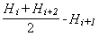
где Нi, Нi+1, Нi+21- абсолютные или относительные отметки точек, полученные нивелированием.
Сначала производится вычисление алгебраических разностей отметок точек последовательно через 5 м. Затем производится вычисление алгебраических разностей отметок точек через 10 м, при этом за Hi принимается при первом вычислении отметка начальной точки участка, а при втором вычислении за Hi принимается отметка точки, расположенной на расстоянии 5 м от начальной, и т.д.; вычисления производятся со сдвижкой на 5 м. В аналогичном порядке производится вычисление алгебраических разностей точек через 20 м. Алгебраические разности отметок точек, определенные с интервалами 5, 10, 20 м, не должны превышать соответственно 7,12 и 24 мм, а для аэродромов класса А - соответственно 5,8 и 16 мм.
13.14. Соответствие длины покрытий проектной должно проверяться по осям ВПП, РД и МС.
13.15. Приемке с составлением актов освидетельствования скрытых работ при устройстве асфальтобетонных покрытий и при усилении асфальтобетоном существующих покрытий подлежат работы по: устройству искусственных оснований и подготовке существующих покрытий (при усилении); установке арматурных сеток; устройству нижних слоев покрытия.
13.16. Освидетельствованию и приемке с составлением актов скрытых работ при создании дернового покрова подлежат работы по предпосевной обработке почвы, внесению удобрений и высеву семян.
Сдачу работ по созданию дернового покрова летного поля следует производить после развития (всхода) посеянных трав. При сдаче указанных работ надлежит проверить соответствие проекту объемов фактически выполненных работ и норм внесенных в почву семян и удобрений (по актам на скрытые работы и при необходимости по фактическим замерам), а также качество дернового покрова.
При оценке качества дернового покрова необходимо проверить количество побегов растений на участке площадью 400 см2. Количество побегов растений на таком участке должно быть 200-300 шт. при преобладании в травосмесях трав с низовым характером роста (мятлики и полевицы, гребенник обыкновенный, овсяница красная и овечья, люцерна, клевер белый, лядвенец, язвенник обыкновенный и т.п.) и 100-200 шт. при преобладании трав с верховым характером роста (бекмания, ежа сборная, житняк, овсяница луговая, рейграс, костер безостый, пырей, лисохвост, тимофеевка, клевер красный, сараделла, эспарцет и т. п.).
В случае неблагоприятных погодных условий допускается производить приемку выполненных работ, когда количество побегов составляет 100 шт. при преобладании трав с низовым характером роста и 50 шт. - с верховым.
13.17. В сводном заключении рабочей комиссии о готовности аэродрома к приемке в эксплуатацию должны быть отражены результаты инструментального контроля качества выполненных работ по устройству аэродромных покрытий.
|
Контролируемые параметры |
Величина допускаемых отклонений (±) |
|
|
для аэродромов класса А |
для аэродромов всех остальных классов |
|
|
1. Отклонения, общие для всех слоев оснований и покрытий |
||
|
Высотные отметки по оси каждого ряда, мм |
10 |
20 |
|
Поперечный уклон каждого ряда |
0,005 |
0,005 |
|
2. Грунтовое основание, вертикальная планировка и водоотводные устройства |
||
|
Толщина плодородного слоя почвы, % |
-10 |
-10 |
|
Продольные уклоны на грунтовом основании |
0,001 |
0,001 |
|
Увеличение крутизны откосов, % |
10 |
10 |
|
Продольные уклоны дна траншей и канав (при сохранении общего направления проектного уклона) |
0,0005 |
0,0005 |
|
Отметки отдельных точек дна траншей и канав, мм |
20 |
20 |
|
Поперечные размеры кюветов и открытых водоотводных канав (по дну), см |
5 |
5 |
|
Снижение плотности грунтового слоя, % |
4 |
4 |
|
Разница между показателями плотности верхнего слоя на одном поперечнике (для капитальных покрытий), % |
2 |
2 |
|
3. Устройство искусственных оснований (песчаных, щебеночных, гравийных, шлаковых) без применения вяжущих |
||
|
Ширина основания, см |
10 |
10 |
|
Толщина слоя, % |
5, но не более 15 мм |
5, но не более 20 мм |
|
|
||
|
Допускаемый просвет (отклонение) для рейки длиной 3 м, мм |
5 |
7 |
|
4. Устройство искусственных основании и покрытий из укрепленных грунтов и каменных материалов, обработанных вяжущими |
||
|
Ширина основания (покрытия), см |
10 |
10 |
|
Толщина слоя, % |
5, но не более 15 мм |
5, но не более 20 мм |
|
Допускаемый просвет (отклонение) для рейки длиной 3 м, мм |
3 |
5 |
|
5. Устройство выравнивающих прослоек из цементо-песчаной смеси |
||
|
Ширина прослойки, см |
10 |
10 |
|
Толщина прослойки, см |
0,5 |
0,5 |
|
Допускаемый просвет (отклонение) для рейки длиной 3 м, мм |
3 |
5 |
|
6. Устройство бетонных, армобетонных, железобетонных и предварительно напряженных покрытий |
||
|
Ширина покрытия, см |
5 |
5 |
|
Толщина покрытия, % |
5, но не более 10 мм |
5, но не более 15 мм |
|
Допускаемый просвет (отклонение) для рейки длиной 3 м, мм |
3 |
5 |
|
Допускаемая разница в уровне поверхности в поперечных и продольных швах монолитных покрытий, мм |
2 |
3 |
|
Снижение величины контролируемого предварительного напряжения против проектного, % |
10 |
10 |
|
7. Устройство сборных покрытий из предварительно напряженных железобетонных плит |
||
|
Допускаемый просвет (отклонение) для рейки длиной 3 м, мм |
5 |
5 |
|
Допускаемое превышение граней смежных плит в швах, мм |
||
|
поперечных |
3 |
3 |
|
продольных |
5 |
5 |
|
8. Устройство покрытий из асфальтобетона |
||
|
Ширина покрытия, см |
5 |
10 |
|
Толщина покрытия, % |
5, но не более 10 мм |
10, но не более 15 мм |
|
Допускаемый просвет (отклонение) для рейки длиной 3 м, мм |
3 |
5 |
Примечания: 1. 90% определений поперечных уклонов должны быть в пределах допускаемых отклонений, а 10% определений не должны выходить за интервал от минус 0,015 до плюс 0,030 для графы 3 и от минус 0,01 до плюс 0,015 для графы 2.
2. 95% определений просветов под рейкой должны быть в пределах допускаемых отклонений, а 5% определений не должны превышать двухкратной величины допускаемых значений.
3. 80% определений разницы в уровне поверхности в швах монолитных цементобетонных покрытий и превышений граней смежных плит сборных покрытий должны быть в пределах допускаемых отклонений, а 20% определений не должны превышать допускаемые более чем в 3,3 раза.
4. 90% определений ширины и толщины конструктивных слоев покрытий должны быть в пределах допускаемых отклонений, а 10% определений не должны выходить за интервал, нижняя граница которого составляет 1,5- кратную, а верхняя 2- кратную величину допускаемых отклонений.
5. 90% определений всех остальных параметров должны быть в пределах допускаемых отклонений, а 10% определений не должны превышать величин допускаемых отклонений более чем и 2 раза.
13.18. При сдаче выполненных работ строительная организация должна предъявить заказчику следующую документацию
- рабочие чертежи на строительство предъявляемых к приемке конструктивных элементов аэродрома;
- общие и специальные журналы работ, указанные в разделах настоящей главы;
- журналы лабораторного контроля производства работ и акты испытаний строительных материалов и контрольных образцов;
- акты освидетельствования скрытых работ, а также акты о производстве геодезических разбивочных работ по выносу проекта аэродрома в натуру;
- сертификаты (технические паспорта) на примененные материалы и конструкции.
13.19. При проверке соответствия выполненных работ по строительству аэродрома проектной документации необходимо учитывать допускаемые отклонения, которые не должны превышать величин, приведенных в табл. 12, а при строительстве вертодромов- величин, приведенных в гр. 3 табл. 12.
Общие положения
1. Настоящую методику следует применять при подборе состава обычных тяжелых бетонов, приготовленных из портландцемента, мелкого и крупного заполнителей, воды и добавок поверхностно- активных веществ (ПАВ) пластифицирующих и воздухововлекающих.
2. При подборе состава бетона необходимо определить рациональное соотношение между компонентами бетонной смеси в соответствии с предъявляемыми требованиями:
- по подвижности (жесткости) бетонной смеси в соответствии с требованиями стандарта на дорожный бетон и п. 8.6. настоящей главы;
- по объему вовлеченного воздуха в свежеуплотненной бетонной смеси в соответствии с требованиями действующего стандарта на дорожный бетон;
- по долговечности бетона, т. е. длительной и устойчивой его работе в дорожной одежде в условиях специфических воздействий окружающей среды в соответствии с проектными марками по морозостойкости;
- по прочности в соответствии с проектными марками бетона. Заданные свойства бетонной смеси и затвердевшего бетоми следует обеспечивать при наименьшем расходе цемента.
3. Подбор состава бетона надлежит производить в следующем порядке:
- расчетным путем установить ориентировочное водоцементное отношение В/Ц, необходимое для получения на данном цементе заданной марки бетона по прочности на растяжение при изгибе;
- в зависимости от назначения бетона принять содержание вовлеченного воздуха и ориентировочные дозировки добавок ПАВ;
- назначить водопотребность В в бетонной смеси заданной подвижности;
- по величинам В и В/Ц рассчитывать содержание цемента Ц в 1 м3 бетона;
- назначить коэффициент раздвижки крупного заполнителя раствором Кр и рассчитать содержание крупного заполнителя КЗ в 1 м3 бетона;
- рассчитать содержание песка П в 1 м3 бетона;
- экспериментально уточнить состав бетона.
4. Все операции по подбору состава бетона необходимо производить с высушенными до постоянной массы заполнителями. Подбор состава бетона следует производить на материалах, принятых к производству работ.
5. Бетонную смесь в лабораторных условиях при подборе состава бетона следует приготавливать в бетоносмесителях, например, марки СБ-27 с объемом готового замеса 60 л, с максимальным приближением условий перемешивания к производственным, поскольку от способа перемешивания компонентов зависит объем вовлеченного воздуха. Время перемешивания бетонной смеси после введения раствора ПАВ и воды затворения должно быть в пределах 1,5-2 мин. Определение показателей подвижности бетонной смеси и объема вовлеченного воздуха, а также приготовление контрольных образцов бетона, следует производить через 30-40 мин после приготовления бетонной смеси.
6. Ориентировочное отношение В/Ц следует рассчитывать по формуле
|
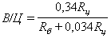 |
(1) |
где
Rц - предел прочности цемента на растяжение при изгибе, определенный по ГОСТ 310-60 или принятый для данной марки цемента по ГОСТ 10178-76;
Rб - марка бетона по прочности на растяжение при изгибе.
7. Расход воды В на 1 м3 бетонной смеси, необходимый для получения заданной подвижности, следует назначать по табл. 13.
|
Осадка конуса, см |
Расход воды, л/м3, при заполнителе |
|||
|
гравий |
щебень |
|||
|
наибольшей крупностью, мм |
||||
|
20 |
40 |
20 |
40 |
|
|
1-3 |
145 |
140 |
160 |
150 |
Примечания: 1. Значения расхода воды приведены для бетонных смесей на крупном или среднем кварцево-полешпатовом песке.
2. При использовании мелких песков расход воды следует увеличить на 5 л/м3.
3. Для снижения водопотребности бетонной смеси следует помимо применения комплексных добавок пластифицирующих и воздухововлекающих ПАВ использовать обогащенные промывкой мелкий и крупный заполнители, укрупняющие добавки природного и дробленного песков и т. д.
8. Содержание цемента Ц в 1 мэ бетона, т, определяют по формуле
|
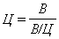 |
(2) |
9. Содержание крупного заполнителя в 1 м3 бетона, т, следует определять по формуле
|
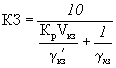 |
(3) |
где VK3 - пустотность крупного заполнителя в стандартном насыпном состоянии в виде относительной величины находят по формуле
|
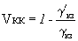 |
(4) |
где g¢кз - насыпная плотность зерен крупного заполнителя, т/м3;
Ткз - плотность зерен крупного заполнителя, т/м3, определяемая по ГОСТу на методы испытаний щебня из естественного камня, гравия и щебня из гравия для строительных работ.
Минимальное значение коэффициента раздвижки в зависимости от дисперсности песка следует принимать, как правило, равным:
1,7 -для мелких песков с модулем крупности от 1,5 до 2;.
1,8-для средних песков с модулем крупности от 2 до 2,5;
1,9-для крупных песков с модулем крупности более 2,5.
Примечание. Под крупным заполнителем понимается оптимальная смесь отдельных его фракций, подбираемая экспериментально по наибольшей насыпной плотности смеси.
10. Содержание песка П, т, в 1 м3 бетона определяют по формуле
|
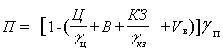 |
(5) |
где VB - объемвовлеченного воздуха в 1 м3 бетона, м3;
gн, gn - соответственно плотность цемента и песка, г/м3.
11. Для обеспечения необходимого количества вовлеченного воздуха при расчете состава бетона следует назначить дозировку добавки абиетиновой смолы (СНВ) в количестве 0,01% массы цемента в расчете на сухое вещество смолы и дозировку добавки СДБ (сульфатнодрожжевой бражки) в количестве 0,2% массы цемента в расчете на сухое вещество.
При использовании пластифицированного портландцемента добавку СДБ вводить не следует. При использовании гидрофобного портландцемента не следует вводить добавку СНВ.
12. Номинальный состав бетона по весу следует определять по формуле
|
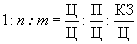 |
(6) |
13. Расчетный состав бетона необходимо подвергнуть экспериментальной проверке на предназначенных к применению материалах с целью уточнения: водопотребности смеси; количества воздухововлекающей и пластифицирующей добавок ПАВ; коэффициента раздвижки; водоцементного отношения.
14. При введении в бетонную смесь пластифицирующей добавки в случае непластифицированного цемента следует уточнить оптимальное количество добавки следующим образом:
а) из рассчитанных по формулам (1)-(5) бетонных смесей с добавками СДБ, приготавливают лабораторные замесы с различным расходом цемента при неизменном значении В/Ц, причем за счет корректировки расхода воды подбираемые бетонные смеси должны быть равноподвижными;
б) из указанных в п. 14 а бетонных смесей формуются лабораторные образцы- балки и кубы, выдерживаются в нормальных условиях 28 сут и испытываются на прочность на растяжение при изгибе и при сжатии;
в) за оптимальную принимают такую дозировку СДБ, которая при данном В/Ц не вызывает снижения прочности по сравнению с контрольным составом (без СДБ).
15. Количество воздухоповлекающей добавки следует уточишь в том случае, если принятая в п. 11 настоящего Приложения дозировка добавки не обеспечивает заданного объема вовлеченного воздуха. Количество воздухововлекающей добавки следует уточнять на пробных замесах с различным ее содержанием.
16. После уточнения оптимального количества пластифицирующей добавки следует уточнить водопотребпость бетонной смеси с комплексной (пластифицирующей и воздухововлекающей) добавкой ПАВ в том случае, если содержание воды по табл. 13 настоящее Приложения не позволило получить смесь с заданной подвижностью.
В зависимости от фактической подвижности бетонной смеси содержание воды в пробных замесах корректируется в большую или меньшую сторону.
17. Оптимальное значение коэффициента раздвижки следует уточнять после уточнения дозировки добавок ПАВ и водопотребности бетонной смеси на пробных замесах путем построения графика зависимости подвижности смеси от коэффициента раздвижки. Для построения этой зависимости приготавливаются бетонные смеси, отличающиеся только значениями коэффициента раздвижки на 0,1-0,3 от минимального значения по п. 9 настоящего Приложения.
Оптимальное значение соответствует значению коэффициента раздвижки на графике, при котором показатели подвижности бетонной смеси не изменяются по сравнению со смесью с минимальными коэффициентами раздвижки.
Максимальное значение коэффициента раздвижки не должно превышать минимальное более чем на 0,2-0,3.
18. Водоцементное отношение следует уточнять по результатам испытания на прочность стандартных образцов- балок и кубов в возрасте 28 сут нормального хранения.
Для уточнения водоцементного отношения следует приготовить не менее чем три замеса бетонной смеси, отличающиеся значениями В/Ц, и после формования, твердения и прочностных испытаний образцов бетона построить графики зависимости прочности бетона на растяжение при изгибе и при сжатии от В/Ц. По этим графикам необходимо определять значение В/Ц, соответствующее заданным маркам бетона по прочности. Окончательным является наименьшее из двух значений В/Ц.
Примечание: Допускается при подборе состава бетона с добавками ПАВ снижать предел прочности бетона при сжатии па 10% при сохранении проектной марки по прочности на растяжение при изгибе.
19. Бетон уточненного состава должен быть испытан на морозостойкость.
20. В номинальный состав бетона следует внести поправки на фактическую влажность заполнителей и получить так называемый рабочий состав бетона.
Если влажность песка Wn,%, а влажность крупного заполнителя Wкз, %, то рабочий расход воды Вр, т, песка Пр, т, и крупного заполнителя КЗР, т, соответственно составит:
|
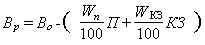 |
(7) |
|
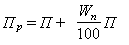 |
(8) |
|
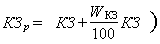 |
(9) |
Где Во, П, КЗ - соответственно расходы воды, песка и крупного заполнителя на 1 м3 бетона номинального состава.
21. Рабочий состав бетона (расход воды) корректируется с учетом концентрации водного раствора воздухововлекающей и пластифицирующей добавок ПАВ.
22. Выбранный в лаборатории состав бетонной смеси должен быть проверен в производственных условиях при пробном бетонировании. При этом необходимо оценить соответствие фактических характеристик бетонной смеси заданным, качество отделки поверхности бетона, а также устойчивость кромок и боковых граней покрытия после прохода бетоноукладчика со скользящими формами. В случае необходимости состав бетонной смеси корректируется по требуемым характеристикам.
23. Необходимо подобрать состав бетона для покрытия марок по пределу прочности на растяжение при изгибе 50, по пределу прочности при сжатии 350, по морозостойкости - Мрз 200. Бетон укладывается бетоноукладочной машиной на гусеничном ходу со скользящими формами со скоростью до 2, м/мин (требуемая осадка конуса смеси 2 см). Материалы: цемент марки 400 с прочностью на растяжение при изгибе - 60 кгс/см2; крупный заполнитель - гранитный щебень, состоящий из 60% фракции 5-20 мм и 40% фракции 20-40 мм; плотность зерен щебня без пор - 2,6 т/м3, насыпная плотность смеси фракций щебня - 1,47 т/м3; пустотность щебня - 0,435; мелкий заполнитель - песок с модулем крупности 2,2; плотность зерен песка без пор - 2,6 т/м3, вода питьевая; добавки ПАВ - СДБ и СНВ.
24. Определяем В/Ц по формуле (1)
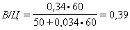
что меньше предельного значения по морозостойкости, приведенного в стандарте на дорожный бетон.
25. Принимаем для расчетов расход воды 0,15 т/м3.'
26. Расход цемента составляет
Ц = 0,15:0,39 = 0,385 т/м3.
27. Расход щебня составляет
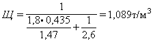
(коэффициент раздвижки принят 1,8).
28. Расход песка составляет
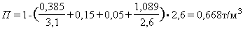
(0,05 м3- требуемый объем вовлеченного воздуха на 1 м3).
29. Расход добавок составляет:
СДБ= 0,2- 0,385 = 0,077 т/м3;
СНВ = 0,01- 0,385 = 0,00385 т/м3.
30. Расчетная плотность бетонной смеси составляет 2,292 т/м3.
31. Расчетный состав бетонной смеси уточняется экспериментально в соответствии с пп. 13-19 настоящего Приложения.
Постановлением Госстроя СССР от 27 февраля 1989 г. № 20 в частичное изменение постановления Госстроя СССР от 12 декабря 1988 г. № 242 (см. «БСТ» № 3, 1989 г.) СНиП 3.06.06-87 «Аэродромы» вводится в действие с 1 июля 1989 г.
В связи с этим постановление Госстроя СССР от 10 декабря 1979 г. № 237 «Об утверждении главы СНиП III- 46- 79 «Аэродромы» считать утратившим силу с 1 июля 1989 г.